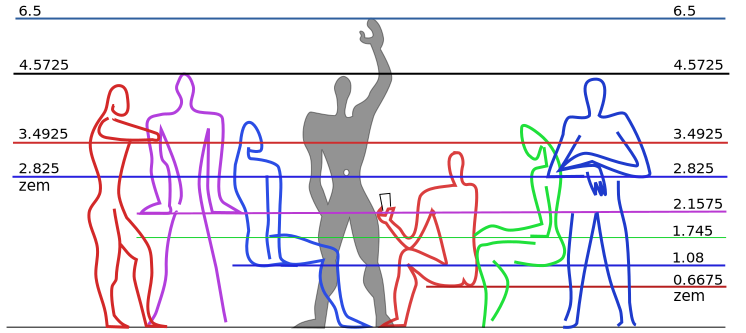
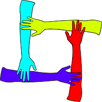
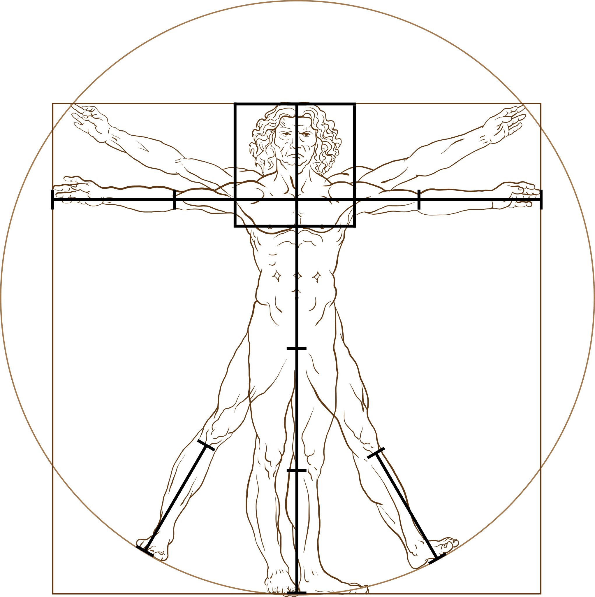

%%{init: {'theme': 'default', 'themeVariables': { 'fontSize': '32px'}}}%%
flowchart LR
A[Dec]-->B[date]-->C[time]-->D[snap]-->E[span]
click A "/dec"
click B "/dec/date"
click C "/dec/time"
click D "/dec/snap"
click E "/dec/span"
Dec
Introducing the Dec measurement system, which uses turns instead of months, weeks, hours, minutes, seconds, and degrees.
Author
Published
2025+100
Dec measurement system
This part of my website focuses on Dec, a measurement system that I created. All Dec measurements are based on turns. When measuring angles📐, a turn represents a full⭕️circle and equals 2\(\pi\) (\(\underline\tau\)) radians (rad) or 360 degrees (°). Geographic coordinates and compass🧭directions are angles📐and thus can, and should😄, be measured in turns instead of rad or °.
Longitude latitude course
Dec measures longitude in parallels (\(\lambda\)), latitude in meridians (\(\phi\)), and compass🧭directions in windroses (\(\alpha\)). To measure certain kinds of angles📐, Dec uses specific types of turns with distinct names like \(\lambda\), \(\phi\), or \(\alpha\). All turn types can be combined with metric prefixes, like deci, centi, or milli, to create turn submultiples, such as deciturns, centiturns, or milliturns.
The table below provides the current longitude in milliparallels (\(\text m\lambda\)) and latitude in millimeridians (\(\text m\phi\)) of Points 0 and 1 on the map🗺️beneath the table. By default, Point 0 is at 800 \(\text m\lambda\) and 0 \(\text m\phi\), near the Galápagos🏝️archipelago of Ecuador🇪🇨, and Point 1 is at 800 \(\text m\lambda\) and 100 \(\text m\phi\), near the bottom of the Missouri bootheel in the United States🇺🇸.
To move the points, click the map🗺️or edit their coordinates in the table. The toggle✅inputs above the table add layers to the map🗺️: country borders, a rainbow🌈colored🎨grid of Dec graticules, a choropleth of UTC time zones, and solar terminator shading with a yellow🟡dot denoting the point where the Sun☀️is directly overhead: \(\text m\lambda\) and \(\text m\phi\).
Alongside the geographic coordinates of a point, each row of the table contains the course in milliwindroses (\(\text m\alpha\)) we would need to maintain to travel🧳the shortest distance to the other point. The shortest distance is shown as orange🟠dots on the map🗺️. The default courses in \(\text m\alpha\) are 0 (North) from Point 0 to 1 and 500 (South) from Point 1 to 0.
Distance speed duration
Dec measures distance in taurs (c), speed in omegars (v), and time in years (y) and days (d). Each of these four turn types approximates (\(\approx\)) a physical property of the Earth🌍: c = \(\tau r\) \(\approx\) its circumference, y \(\approx\) the duration of its orbit around the Sun☀️, d \(\approx\) the duration of its rotation on its axis, and \(\text c\over\text d\) = v = \(\omega r\) \(\approx\) the speed of its rotation at the Equator.
At a speed of 0.5 v or 500 milliomegars (mv), we could travel🧳the 0.1 c or 100 millitaurs (mc) between the default positions📍of Points 0 and 1 in 0.2 d or 200 millidays (md). The time required to travel🧳between two points is the distance divided by the speed: mc ÷ v = md = c ÷ v = mc ÷ mv = d.
Interactive world map
viewof bordertoggle = labelToggle(Inputs.toggle, "Border", false, "bordertoggle")
viewof gridtoggle = labelToggle(Inputs.toggle, "Grid", false, "gridtoggle")
viewof utctoggle = labelToggle(Inputs.toggle, "UTC", false, "utctoggle")
viewof suntoggle = labelToggle(Inputs.toggle, "Sun", false, "suntoggle")
rstbtn.node();table = createTable([
{ Point: 0, Milliparallel: 800, Millimeridian: 0, Milliwindrose: 0 },
{ Point: 1, Milliparallel: 800, Millimeridian: 100, Milliwindrose: 500 },
], { headerEditable: false, appendRows: false })
// {Point: 0, Milliparallel: `${Math.floor(long2turn(Place_A[0], 3))}`, Millimeridian: `${Math.floor(lati2turn(Place_A[1], 3))}`, Milliwindrose: `${Math.floor(lati2turn(coor2bear(Place_A, Place_B)))}`},
// {Point: 1, Milliparallel: `${Math.floor(long2turn(Place_B[0], 3))}`, Millimeridian: `${Math.floor(lati2turn(Place_B[1], 3))}`, Milliwindrose: `${Math.floor(lati2turn(coor2bear(Place_B, Place_A)))}`},
// ], {headerEditable: false, appendRows: false})// https://observablehq.com/@d3/solar-terminator
// https://observablehq.com/@mbostock/time-zones
viewof coordinates = worldMapCoordinates([[turn2long(table.rows[1].cells[1].childNodes[0].innerText), turn2degr(table.rows[1].cells[2].childNodes[0].innerText % 250)], [turn2long(table.rows[2].cells[1].childNodes[0].innerText), turn2degr(table.rows[2].cells[2].childNodes[0].innerText % 250)], projection], [width, height * mapsize / 100])
//viewof coordinates = worldMapCoordinates([
// [turn2long(table.rows[1].cells[1].childNodes[0].innerText), turn2degr(table.rows[1].cells[2].childNodes[0].innerText % 250)],
// [turn2long(table.rows[2].cells[1].childNodes[0].innerText), turn2degr(table.rows[2].cells[2].childNodes[0].innerText % 250)],
// projection], [width, height])Color wheel compass
// https://observablehq.com/@maddievision/enneagram
quickRender(326, 326, context => {
const center = 163
const ringRadius = 140
const ringLineWidth = 4
// Ring
context.beginPath();
context.lineWidth = ringLineWidth
context.strokeStyle = "#ddd"
context.arc(center, center, ringRadius, 0, 2 * Math.PI);
context.stroke();
context.font = "Bold 16px Arial"
context.textAlign = 'center'
let octPoints = []
for (let i = 0; i < 8; i++) {
const xPhase = Math.sin(i / 8 * 2 * Math.PI)
const yPhase = Math.cos(i / 8 * 2 * Math.PI)
const x = center + ringRadius * xPhase
const y = center - ringRadius * yPhase
octPoints.push([x, y])
}
// Lines
octConnections.forEach(([a, b], i ) => {
const [x1, y1] = octPoints[a]
const [x2, y2] = octPoints[b]
const lineAngle = Math.atan2(y2 - y1, x2 - x1)
// Draw just short of the label circumference
const x2a = x2 - 28 * Math.cos(lineAngle)
const y2a = y2 - 28 * Math.sin(lineAngle)
const x1a = x1 + 28 * Math.cos(lineAngle)
const y1a = y1 + 28 * Math.sin(lineAngle)
context.lineWidth = ringLineWidth
context.strokeStyle = "#ddd"
context.beginPath();
context.moveTo(x2a, y2a);
context.lineTo(x1a, y1a);
context.stroke();
})
// Arrow Heads
octConnections.forEach(([a, b], i ) => {
const [x1, y1] = octPoints[a]
const [x2, y2] = octPoints[b]
const lineAngle = Math.atan2(y2 - y1, x2 - x1)
const xl = x2 - 88 * Math.cos(lineAngle - (15 / 360) * 2 * Math.PI)
const yl = y2 - 88 * Math.sin(lineAngle - (15 / 360) * 2 * Math.PI)
const xr = x2 - 88 * Math.cos(lineAngle + (15 / 360) * 2 * Math.PI)
const yr = y2 - 88 * Math.sin(lineAngle + (15 / 360) * 2 * Math.PI)
const x2a = x2 - 22 * Math.cos(lineAngle)
const y2a = y2 - 22 * Math.sin(lineAngle)
const x = x2 - 69 * Math.cos(lineAngle)
const y = y2 - 69 * Math.sin(lineAngle)
context.fillStyle = hsl8[i]
context.strokeStyle = window.darkmode ? "#aaa" : "#333";
context.lineWidth = 1
context.beginPath();
context.moveTo(x2a, y2a);
context.lineTo(xl, yl);
context.lineTo(xr, yr);
context.lineTo(x2a, y2a);
context.fill();
context.stroke();
context.fillStyle = yiq(hsl8[i]) > 0.51 ? "#000" : "white"
context.fillText(["N", "NE", "E", "SE", "S", "SW", "W", "NW"][i], x, y + 6)
})
// Labels
octPoints.forEach(([x, y], i) => {
context.lineWidth = 1
context.fillStyle = hsl8[i]
context.strokeStyle = window.darkmode ? "#aaa" : "#333";
context.beginPath();
context.arc(x, y, 22, 0, 2 * Math.PI);
context.fill();
context.stroke();
context.fillStyle = yiq(hsl8[i]) > 0.51 ? "#000" : "white";
context.fillText(["N", "NE", "E", "SE", "S", "SW", "W", "NW"][i], x, y + 6)
})
})// https://observablehq.com/@observablehq/categorical-palette-tool
displayPalette(hsl8, {darkMode: true})// https://observablehq.com/@maddievision/enneagram
quickRender(326, 326, context => {
const center = 163
const ringRadius = 140
const ringLineWidth = 4
// Ring
context.beginPath();
context.lineWidth = ringLineWidth
context.strokeStyle = "#ddd"
context.arc(center, center, ringRadius, 0, 2 * Math.PI);
context.stroke();
context.font = "Bold 24px Arial"
context.textAlign = 'center'
let decPoints = []
for (let i = 0; i < 10; i++) {
const xPhase = Math.sin(i / 10 * 2 * Math.PI)
const yPhase = Math.cos(i / 10 * 2 * Math.PI)
const x = center + ringRadius * xPhase
const y = center - ringRadius * yPhase
decPoints.push([x, y])
}
// Lines
decConnections.forEach(([a, b], i ) => {
const [x1, y1] = decPoints[a]
const [x2, y2] = decPoints[b]
const lineAngle = Math.atan2(y2 - y1, x2 - x1)
// Draw just short of the label circumference
const x2a = x2 - 28 * Math.cos(lineAngle)
const y2a = y2 - 28 * Math.sin(lineAngle)
const x1a = x1 + 28 * Math.cos(lineAngle)
const y1a = y1 + 28 * Math.sin(lineAngle)
context.lineWidth = ringLineWidth
context.strokeStyle = "#ddd"
context.beginPath();
context.moveTo(x2a, y2a);
context.lineTo(x1a, y1a);
context.stroke();
})
// Arrow Heads
decConnections.forEach(([a, b], i ) => {
const [x1, y1] = decPoints[a]
const [x2, y2] = decPoints[b]
const lineAngle = Math.atan2(y2 - y1, x2 - x1)
const xl = x2 - 79 * Math.cos(lineAngle - (15 / 360) * 2 * Math.PI)
const yl = y2 - 79 * Math.sin(lineAngle - (15 / 360) * 2 * Math.PI)
const xr = x2 - 79 * Math.cos(lineAngle + (15 / 360) * 2 * Math.PI)
const yr = y2 - 79 * Math.sin(lineAngle + (15 / 360) * 2 * Math.PI)
const x2a = x2 - 22 * Math.cos(lineAngle)
const y2a = y2 - 22 * Math.sin(lineAngle)
const x = x2 - 60 * Math.cos(lineAngle)
const y = y2 - 60 * Math.sin(lineAngle)
context.fillStyle = hsl10[i]
context.strokeStyle = window.darkmode ? "#aaa" : "#333";
context.lineWidth = 1
context.beginPath();
context.moveTo(x2a, y2a);
context.lineTo(xl, yl);
context.lineTo(xr, yr);
context.lineTo(x2a, y2a);
context.fill();
context.stroke();
context.fillStyle = yiq(hsl10[i]) > 0.51 ? "#000" : "white"
context.fillText(i, x, y + 8)
})
// Labels
decPoints.forEach(([x, y], i) => {
context.lineWidth = 1
context.fillStyle = hsl10[i]
context.strokeStyle = window.darkmode ? "#aaa" : "#333";
context.beginPath();
context.arc(x, y, 22, 0, 2 * Math.PI);
context.fill();
context.stroke();
context.fillStyle = yiq(hsl10[i]) > 0.51 ? "#000" : "white";
context.fillText(i, x, y + 8)
})
})// https://observablehq.com/@observablehq/categorical-palette-tool
displayPalette(hsl10.slice(0, 10), {darkMode: true})// https://observablehq.com/@pjedwards/compass-rose-as-legend-with-colors
svg`<svg width="${size}" height="${size}" viewBox="${-size/2} ${-size/2} ${size} ${size}">
<g transform='rotate(${Math.round(-colorD * .36)})'>
${repeat(tick(radius, 5, '#434343'), 5 * 4 * 10)}
${repeat(tick(radius, 8), 10 * 4)}
${repeat(`<path d="M 0,-${radius+12} l 3,10 l -6,0 z" fill="black" stroke="black" stroke-width="1"/>`, 4, 0)}
${repeat(`<path d="M 0,-${radius+12} l 3,10 l -6,0 z" fill="white" stroke="black" stroke-width="1"/>`, 4, 45)}
<circle r="${radius}" fill="#d3d3d3" stroke="#434343" stroke-width="3" />
${repeat(directionMarker(radius+14, 24), 4, 0)}
${repeat(directionMarker(radius+12, 24), 4, 45)}
${repeat(turnMarker(radius+14, 32), 4, 0)}
${repeat(turnMarker(radius+12, 32), 4, 45)}
${repeat(pie(radius-margin/2, 2 * Math.PI * (radius-margin/2) / deccolors.length / 2, 1, deccolors), deccolors.length, 360/deccolors.length)}
</svg>
`Hue saturation lightness (hsl)
// https://observablehq.com/@paavanb/progressive-color-picker
{ const input = Inputs.range([0, 1000], { label: "Hue", value: 0, step: 1 })
input.value = initialHSL[0]
input.oninput = (evt) => onUpdateHSL(dec2hue(evt.currentTarget.value / 1000), colorS / 1000, colorL / 1000)
return Inputs.bind(input, viewof colorD)
}Course color table
| \(\text m\alpha\)🧭 | c°🧭 | h°🎨 | hex🎨 | |
|---|---|---|---|---|
| NE | 125 | 45 | 44 | fb0 |
| E | 250 | 90 | 68 | df0 |
| SE | 375 | 135 | 96 | 6f0 |
| S | 500 | 180 | 180 | 0ff |
| SW | 625 | 225 | 216 | 06f |
| W | 750 | 270 | 264 | 60f |
| NW | 875 | 315 | 292 | d0f |
| N | 0 | 0 | 0 | f00 |
The color🎨wheel compass🧭above indicates both a hue in milliturns (mt) and a course in \(\text m\alpha\). We can convert the hue to HSL and HSV degrees (h°) and the course to compass🧭degrees (c°): 25 \(\text m\alpha\) = 9 c°. To rotate🔄the color🎨wheel compass🧭, use the “Hue” range🎚️and hue bar inputs beneath it or change the course from Point 0 to 1 on the map🗺️.
Red green blue (rgb)
The table beneath the hue bar compares the current Point 0 to 1 course in its top row with the cardinal and intercardinal directions. Together, the range🎚️inputs underneath the hue bar form a Hue Saturation Lightness (HSL) triplet. Like Red Green Blue (RGB) or hexadecimal (hex) triplets, HSL triplets specify a full-fledged color🎨instead of just a hue.
Bad Pun Alert
Color🎨can provide a general idea of angular📐measure, regardless of the metric prefixes or units we use. Therefore, we can reuse♻️colors🎨across many different contexts. Most often, red designates starting points, like North (0 \(\text m\alpha\)) and Longitude 0 (0 \(\text m\lambda\)), and cyan denotes midpoints, such as South (500 \(\text m\alpha\)) and Longitude 5 (500 \(\text m\lambda\)).
The Equator (0 \(\text m\phi\)) is the major latitude midway between the South (-250 \(\text m\phi\)) and North (250 \(\text m\phi\)) Poles. Unlike the Equator, the Tropics of Cancer♋(65 \(\text m\phi\)) and Capricorn♑️(-65 \(\text m\phi\)) and the Arctic (250 \(\text m\phi\) – 65 \(\text m\phi\) = 185 \(\text m\phi\)) and Antarctic (65 \(\text m\phi\) – 250 \(\text m\phi\) = -185 \(\text m\phi\)) Circles are defined by the axial tilt of the Earth🌏(65 mt).
Dec time zones
Enable the “Grid” toggle✅input to see Latitudes -2 (-200 \(\text m\phi\)), -1 (-100 \(\text m\phi\)), 0 (0 \(\text m\phi\)), 1 (100 \(\text m\phi\)), and 2 (200 \(\text m\phi\)) on the map🗺️above along with the ten major longitudes that divide the Earth🌎into the ten Dec time zones. Notably, Longitude 0 is the major longitude that functions as both the Prime Meridian and International Date Line in Dec.
Like the ten major longitudes that separate them, Dec time zones are numbered 0 to 9. Based on its current deciparallel (d\(\lambda\)) longitude, , Point 0 on the map🗺️above is in Zone . The number assigned to each time zone is its offset from Zone 0 in decidays (dd). To obtain the dd offset at a location, we floor its d\(\lambda\) longitude: ⌊⌋ = .
Each Dec time zone is 1 d\(\lambda\) wide and 0.5 \(\phi\) long. While 1 \(\phi\) is always ~1 c long, the length of a \(\lambda\) varies by latitude. At the Equator, 1 \(\lambda\) is ~1 c long. At the North or South Pole, the length of a \(\lambda\) is zero. The approximate c length of a \(\lambda\) is the cosine of its latitude in \(\phi\), rad, or °, depending on the input requirement of our cosine function: cos() = .
viewof costype = Inputs.radio(["turns", "radians", "degrees"], {label: "Cosine input", value: "turns"})Coordinated Universal Time (UTC)
UTC time zone offsets range from to dd. The UTC offset provided by your web browser is ÷ 144 = dd. The Dec time zone that corresponds to this UTC offset is Zone . The time in corresponding Dec and UTC time zones can differ by up to 0.5 dd. The difference between your Dec and UTC time is ÷ 144 = dd.
To obtain the time in Zone 0, we can subtract the offset of any time zone from its time. Inversely, we can get the time in any time zone by adding its offset to the Zone 0 time. The dates and times in Zone 0 and UTC+00:00 match exactly. Zone 5 and UTC+12:00 also have matching dates and times, both are precisely one day ahead of UTC-12:00.
To avoid date mismatches with UTC time zones that have negative offsets, we can subtract ten dd from any positive Dec offset to make it negative: – 10 = . Therefore, each Dec time zone has both a positive and a negative offset. The two offsets in any time zone are exactly one day apart, produce the same time, and have the same color🎨label🏷️.
Millenium Year Day
When we add the offset selected by the range🎚️input above to the current date and time in Zone 0, we get + as the date and as the time. We can apply color🎨labels🏷️to each Dec date and time component. Dec dates consist of a year and a day-of-year (doy), whereas Dec times are composed of a time-of-day (tod) and a time zone.
Each doy also has two components. The first two digits of a three-digit doy represent a group of ten days called a decaday (dek). The last digit of a doy is the day-of-dek (dod). In Dec, deks are used instead of months and weeks. Likewise, Dec uses dods in lieu of days-of-month (doms) and days-of-week (dows). In Zone , it is currently Dek and Dod .
Year color🎨labels🏷️are based on millimillennia (mk). Every millennium starts with Year 0 (0 mk) and has Year 500 (500 mk) as its midpoint. Doy color🎨labels🏷️are derived from milliyears (my). Every year starts on Day 0 (0 my). The midyear point (500 my) is noon (500 md) on Day 182 in common years and midnight (0 md) on Day 183 in leap years.
Zone equatorial meter (zem)
 Wikimedia
{kind=link}
Apart from c, Dec also measures distance using a unit called the zone equatorial meter (zem). The width of a Dec time zone at the Equator is approximately ten million (~107) zems. Similarly, the distance from the Equator to one of the Poles is ~107 meters. In other words, a decimeridian (\(\text d\phi\)) is ~107 zems long and a quarter meridian is ~107 meters long.
{kind=link}
Length area volume
You can approximate a zem (z) using your hands🤲. With your palms flat on a table in front of you and the tips of your thumbs👍touching, the maximum distance between the tips of your pinkies is ~1 z. When you spread out the fingers on one hand✋or do the “call me”, “drink”, or “shaka”🤙gesture, your thumb👍and pinky tips are ~0.5 z apart.
 Wikimedia
{kind=link}
To visualize a square zem (z2), imagine four people standing in a circle, facing inward, each with their right hand✋placed on top of the elbow of the person to their right. Alternatively, two people can stand in front of each other and raise their arms💪, placing one hand✋on the elbow of the other person and the other hand✋on their own elbow.
{kind=link}
You can approximate a z2 yourself by sitting in a chair🪑or standing🧍with your knees and feet🦶1 z, 4 decimeters (dm), or 16 inches apart, which is probably about the width of your hips or shoulders. The z2 will be between your shins, its top will be below your knees, and its bottom will be either above your ankles or feet🦶, depending on your height.
Typical seat height
According to dimensions.com, 115 centizems (cz) is the typical seat height for both men and women age 25 to 45. A box📦that is the size of a cubic zem (z3) would likely fit under a typical chair🪑 or in between the shins of two people sitting in front of each other with their knees and feet🦶1 z apart and their legs🦵bent at 25 centiturn (ct) angles📐.
In Slovak🇸🇰, zem means Earth🌍. This is fitting because all Dec units are based on physical attributes of the Earth🌏. At the Equator, the Earth🌎rotates on its axis at a speed of 1.00224 v. If we could indefinitely maintain this speed while flying West in an airplane✈️towards the setting sun☀️, we would be able to perpetually fly into the sunset🌅.
Speed of sound
To travel fast enough, the airplane✈️would need to surpass the speed of sound🔊, which at 15 ° Celsius and 1 standard atmosphere is 0.735048 v or Mach 1. Mach numbers are not as reliable as v, because they are relative to the speed of sound🔊, which varies greatly by air temperature and pressure. The cruising speed of a Boeing 747 is 0.54 v or Mach 0.85.
The highway🛣️speed of a car🚗is roughly tenfold slower than the cruising speed of an airplane✈️. If we are driving on a highway🛣️at a speed of 50 mv and our exit is 1000 z away, we will have 20 centimillidays until we have to exit the highway🛣️. To ensure we do not miss our exit, we can periodically check a countdown of the remaining z: .
Inverse of b (iob)
Dec refers to centimillidays as beats (b) because they are similar in duration to heart❤️beats or musical beats. A d is 100 centiday (cd), 105 b, or 106 microdays (\(\micro\text d\)). One mc is 100 kilozems (kz), 105 z, 106 decizems (dz), or 106 nanotaurs (nc). Therefore, mv = \(\text{mc}\over\text d\) = \(\text {kz}\over\text {cd}\) = \(\text z\over\text b\) = \(\text {dz}\over\micro\text d\) = \(\text {nc}\over\micro\text d\). A cd is 96% of a quarter hour and a b is 86.4% of a second.
Beats per milliday (bpm)
A normal resting heart❤️rate is between 100 and 166.6 b per md (BPM). The unofficial anthem of the Dec measurement system, “Turn the beat around”, has a tempo of 188.64 BPM, which corresponds to the allegro tempo marking. A Dec clock⏰ticks at a rate of 100 BPM, \(\text b^{-1}\), \(1\over\text b\), or 1 inverse-of-b (iob), which is 1.15740 times more frequent than a Hertz.
Frequency period wavelength
We can divide one by the sound🔊frequency selected by the “Iobs” range🎚️input below to get its period, 1 ÷ kiloiobs (ki) = millibeats (mb), or divide the speed of sound🔊by it to get its wavelength: 735048 microomegars (\(\micro\text v\)) ÷ iobs (i) = millizem (mz). Press the Play▶️button below to hear the chosen frequency for a duration of b.
// https://observablehq.com/@freedmand/sounds
viewof iobs = Inputs.range([1, 9999], { step: 1, value: 380, label: "Iobs" })Ten equal temperament (Xet)
The positive (+) and negative (–) indexes, hex triplets, and h° in the table below are used by Dec to label🏷️groups of ten, like dods, “top of the dd” tods, and time zones. In addition to colors🎨, Dec also labels🏷️groups of ten with the musical notes that constitute the Dec chromatic (Dechromatic) scale of the Ten equal temperament (Tenet) musical system.
Tenet (Xet) identifies each Dechromatic scale note with a single-digit integer and expresses all other possible sound🔊frequencies as decimal numbers. In contrast, the notes of the 12 equal temperament (12ET) musical system have names that consist of a letter from A to G and a symbol such as sharp (♯), half sharp (𝄲), flat (♭), and half flat (𝄳).
The sound🔊frequencies of two consecutive Xet Dechromatic scale notes always differ by one step (s), but the differences between consecutive 12ET chromatic scale notes vary from the ~599 millisteps (ms) between A♯ and B to the ~1067 ms between G♯ and A. A typical person can reliably distinguish sounds🔊that differ by at least 200 ms.
The rightmost column of the table below shows the 12ET notes that are closest to the Xet Dechromatic scale notes. 12ET considers B𝄲, D𝄲, and E𝄳 to be microtones. The sound🔊frequency differences between the nearest Xet and 12ET notes in the table range from the 8 ms between Notes 9 and A to the ~87 ms between Notes 5 and F.
Color sound table
| + | – | hex🎨 | h°🎨 | 12ET🎶 |
|---|---|---|---|---|
| 0 | -10 | f00 | 0 | A♯ |
| 1 | -9 | f90 | 36 | B𝄲 |
| 2 | -8 | ff0 | 60 | C♯ |
| 3 | -7 | af0 | 80 | D𝄲 |
| 4 | -6 | 0f0 | 120 | E𝄳 |
| 5 | -5 | 0ff | 180 | F |
| 6 | -4 | 08f | 208 | F♯ |
| 7 | -3 | 00f | 240 | G |
| 8 | -2 | 90f | 276 | G♯ |
| 9 | -1 | f0f | 300 | A |
Octave + note = tone
The image above applies Dec color🎨labels🏷️to one octave of piano🎹keys. In Xet, an octave is 10 s or 104 ms. The text below the image provides from top to bottom the scientific pitch name, integer i sound🔊frequency, and integer mz wavelength of the corresponding white key. As octave indexes and frequency increase, wavelength decreases.
Octave indexes in Xet and 12ET match except for Xet notes with indexes below 2 and 12ET notes from A♯ to B𝄲. From the perspective of Xet, all of the labeled🏷️keys in the image above are in Octave 4. When we append a positive note index that is less than ten to an octave index which is a positive integer, we obtain a Xet musical tone index.
The tone indexes of the the labeled🏷️keys in the image above range from 40.069 to 49.008. Tone 49.008 is A4, the A note widely used to tune musical instruments. Tone 41.302 is C4, the “Middle C” in between the bass and treble🎼clefs of a grand staff. The typical audible range for humans extends from Tone 03 to Tone 104.
By default, each Xet note or tone lasts one musical beat. Xet modifies the duration of notes and tones by appending × and a multiplier or ÷ and a divisor. The first two measures of the chorus from “Turn the beat around” are shown below and can be expressed in Xet as Octave 4 and a series of notes followed by a rest (∅): 9 9÷2 8 8 6×4 ∅.
abcjs = require('https://bundle.run/abcjs@5.1.2/midi.js')
code = `
M:4/4
L:1/4
K:A
y A A/2G/2- G/2 G F/2- | F3 z |
w: Turn the~ ~beat _ ~a- ~round
`
abc(code, true)function abc(tune, midi = false, notation = true) {
function colorRange(range, color) {
if (range && range.elements) {
range.elements.forEach(function(set) {
set.forEach(function(item) {
item.setAttribute("fill", color);
});
});
}
}
const result = html `<div/>`;
if (notation) {
const notation = result.appendChild(html `<div/>`);
var abcElem = (abcjs.renderAbc(notation, tune));
}
if (midi) {
result.appendChild(html `<link rel="stylesheet" href="https://maxcdn.bootstrapcdn.com/font-awesome/4.5.0/css/font-awesome.min.css"/><link rel="stylesheet" type="text/css" href="https://unpkg.com/abcjs@5.1.2/abcjs-midi.css"/>`);
const midi = result.appendChild(html `<div/>`);
abcjs.renderMidi(midi, tune, {
midiListener: function(a, b, c) {},
animate: {
listener: function(a, b, c) {
colorRange(a, "#000000");
colorRange(b, "#3D9AFC");
},
target: abcElem[0],
qpm: abcElem[0].getBpm()
}
});
// abcjs.midi.startPlaying(document.querySelector(".abcjs-inline-midi"),true)
}
return result;
}US customary units
The unit conversion table below shows the United States🇺🇸(US) customary units that Dec redefines. The values in the first column are approximate fold changes from original to redefined units. A fold change of 1 means 0 change. Identical fold changes indicate US customary units derived from the same Dec and International System of Units (SI) units.
Unit conversion table
| US | Dec | SI |
|---|---|---|
| 1.0356 miles | \(25\over6\) kz | \(5\over3\) km |
| 0.9843 yards | \(9\over4\) z | 9 dm |
| 0.9843 feet | \(3\over4\) z | 3 dm |
| 0.9843 inches | \(1\over16\) z | 25 mm |
| 0.9884 acres | \(1\over40\) kz2 | \(1\over250\) km2 |
| 1.0725 square miles | \(625\over36\) kz2 | \(25\over9\) km2 |
| 0.9688 square yards | \(81\over16\) z2 | 81 dm2 |
| 0.9688 square feets | \(9\over16\) z2 | 9 dm2 |
| 0.9688 square inches | \(1\over256\) z2 | 625 mm2 |
| 1.1023 pounds | 500 g | 500 g |
| 1.0567 barrels | 2 z3 | 128 L |
| 1.0567 kegs | 1 z3 | 64 L |
| 1.0567 gallons | \(1\over16\) z3 | 4 L |
| 1.0567 quarts | \(1\over64\) z3 | 1 L |
| 1.0567 pints | \(1\over128\) z3 | 500 mL |
| 1.0567 cups | \(1\over256\) z3 | 250 mL |
| 1.0821 wineglass | 1 dz3 | 64 mL |
| 1.0821 ounces | \(1\over2\) dz3 | 32 mL |
| 1.0821 tablespoons | \(1\over4\) dz3 | 16 mL |
Miles per hour (mph)
Unlike Dec and SI, the US customary measurement system does not use metric prefixes to scale units by powers of ten. Redefined US customary units serve as convenient reference points. US customary volume units have intuitive names and scale by powers of two. Miles are redefined such that 1 mile per hour is equal to 1 mv or \(5\over3\) kilometers (km) per hour.
Hexamilliare wineglass keg
A square kilozem (kz2) is 1 hexakilare, 16 hectares, 1600 ares, 40 Dec acres, 0.16 square kilometers (km2), ~0.062 Dec square miles, or 106 z2. A z2 is a hexamilliare (x), 16 square decimeters (dm2), 1.7 Dec square feet🦶, or 256 Dec square inches. A square decazem (Dz2) is 1 hexadeciare, 16 square meters (m²), ~19.75 Dec square yards, or 100 x.
A cubic decizem (dz3) is 1 cubic nanotaur (nc3), 2 Dec ounces, or 64 milliliters (mL). A dz3 of water🌊weighs 64 grams (g). Even though a Dec ounce of water🌊weighs close to a sixteenth of a Dec pound, Dec does not measure weights in ounces. A z3 is 16 Dec gallons or 64 liters (L). A z3 of water🌊weighs 64 kilograms (kg) or 128 Dec pounds.
 Wikimedia
{kind=link}
Body mass index (bmi)
If Leonardo da Vinci’s Vitruvian Man were 4 z tall, we could measure 1 z from his knees to his feet🦶or from his elbows💪to his fingertips. If he also weighed 64 kg, his Body Mass Index (BMI) would be 4 \(\text {kg}\over\text z^2\) or 25 \(\text {kg}\over\text m^2\). A normal BMI ranges from 2.96 to 4 \(\text {kg}\over\text z^2\) or 18.5 to 25 \(\text {kg}\over\text m^2\). A BMI of kg ÷ z2 = \(\text {kg}\over\text z^2\) = \(\text {kg}\over\text m^2\) is considered .
Centizem centimeter inch
{kind=link}
The longest length depicted in the image of a ruler📏above is 1 dz, 1 nc, 4 centimeters (cm), or \(8\over5\) Dec inches, and the shortest length is \(1\over2\) mz, \(1\over5\) millimeters (mm), \(1\over125\) Dec inches, or \(1\over127\) US customary inches. A US customary inch is \(127\over2\) mz, \(127\over5\) mm, or \(127\over125\) Dec inches. A Dec inch is \(5\over2\) cm. A cm is \(5\over2\) cz. A z is 4 dm. A dm is 4 Dec inches.
Summary
This article introduces the Dec measurement system and describes how Dec uses metric prefixes and the properties of the planet Earth🌍to define units based on turns for geographic coordinates, compass🧭directions, dates, times, speeds, distances, areas, volumes, and weights. Each unit has a unique name, such as \(\lambda\), \(\phi\), \(\alpha\), y, d, b, v, c, z, or x.
Dec attempts to bridge the gap, improve interoperability, and faciliate conversion between the US customary and SI measurement systems by redefining US customary units. Redefinition of US customary units makes inches ~1.58% shorter, miles ~3.56% longer, pints ~5.67% larger, ounces ~8.21% larger, and pounds ~10.23% heavier.
Dec color🎨labels🏷️can convey an impression of many different kinds of values at a glance. Moreover, color🎨labels🏷️help avoid confusion when dealing with different metric prefixes. The current tod in Zone can be expressed as dd, days, or b. Metric prefixes allow us to shift the decimal separator in decimal numbers.
Next
Now that you have had a taste of Dec, I hope that you are hungry for more! If so, dive🤿deeper into Dec dates and times before tackling Dec snaps🫰and spans🌈. My filter, include, and script articles discuss the Quarto publishing system and how I display Dec dates in the navigation bar, title block, and citation section of each article on my website.
%%{init: {'theme': 'default', 'themeVariables': { 'fontSize': '32px'}}}%%
flowchart LR
A[Dec]-->B[date]-->C[time]-->D[snap]-->E[span]
Z[ ]:::empty~~~F[Quarto]-->G[filter]-->H[include]-->I[script]
classDef empty width:0px;
click A "/dec"
click B "/dec/date"
click C "/dec/time"
click D "/dec/snap"
click E "/dec/span"
click F "/quarto"
click G "/quarto/filter"
click H "/quarto/include"
click I "/quarto/script"
Cite
Please support Dec by citing it as shown at the bottom of this article. Listed below are citations for the Observable notebooks that I adapted into the map🗺️, color🎨wheel compass🧭, and other visualizations above. The list also includes citations for three works that predate the French Revolution and three more recent articles published on websites.
In his 1704 book entitled Optiks, Isaac Newton presented the first color🎨wheel and linked its colors🎨to musical notes. On 2025+080, I read The Color of Sound by Clint Goss, which presents a method of connecting musical notes to colors🎨via their frequencies. The note and color🎨pairs in that article are similar to those of the Dechromatic scale.
In 1754, Jean le Rond d’Alembert lauded the benefits of decimalisation. In 1788, Claude Boniface Collignon proposed measuring length in dz or nc and tracking time in deks, dd, md, \(\micro\text d\), and nanodays (nd). On 2025+039, I saw the definition of a zem, 1 z = 10-8 c = 40 cm, in a table of ten possible length units from a 2004 arxiv article.
The fundamental properties of Dec dates are defined by algorithms developed by Howard Hinnant and described in his 2021 article entitled chrono-Compatible Low-Level Date Algorithms. On 2024+285, I found a 2014 article which proposed a decimal time system with twenty time zones, each five cd wide, based on Longitude 05 (50 \(\text m\lambda\)).
- Agnoli, Paolo & D’Agostini, Giulio. 2004+330. “Why does the meter beat the second?” . https://arxiv.org/abs/physics/0412078.
- Armstrong, Zan 2023+057. “Text color annotations in markdown.” . https://observablehq.com/@observablehq/text-color-annotations-in-markdown.
- Bostock, Mike 2020+335. “Time Zones.” . https://observablehq.com/@mbostock/time-zones.
- Bostock, Mike 2022+037. “Solar Terminator.” . https://observablehq.com/@d3/solar-terminator.
- Bostock, Mike 2023+314. “Input: Table.” . https://observablehq.com/@observablehq/input-table.
- Clements, John. 2014+091, “Decimal Time Zones.” . https://www.brinckerhoff.org/blog/2014/05/31/decimal-time-zones.
- Clint Goss. 2022+098. “Color of Sound.” . https://www.flutopedia.com/sound_color.htm.
- Collignon, Claude Boniface. 1788. “Découverte d’étalons justes, naturels, invariables et universels.” . https://archive.org/details/dcouvertedtalon00collgoog/page/n68/mode/2up.
- Edwards, Paul. 2022+171. “Compass Rose as legend with colors.” . https://observablehq.com/@pjedwards/compass-rose-as-legend-with-colors.
- Freedman, Dylan. 2017+345. “Sounds.” . https://observablehq.com/@freedmand/sounds.
- Gordon, Marcus A.. 2018+288. “Wavelengths and Spectral Colours.” . https://observablehq.com/@magfoto/wavelengths-and-spectral-colours.
- Harmath, Dénes. 2018+104. “ABC.” . https://observablehq.com/@thsoft/abc.
- Hinnant, Howard. 2021+184. “
chrono-Compatible Low-Level Date Algorithms.” . https://howardhinnant.github.io/date_algorithms.html. - Johnson, Ian 2021+121. “Draggable World Map Coordinates Input.” . https://observablehq.com/@enjalot/draggable-world-map-coordinates-input.
- Lim, Maddie 2018+330. “Enneagram.” . https://observablehq.com/@maddievision/enneagram.
- Newton, Issac. 1704. “Opticks.” . https://doi.org/10.5479/sil.302475.39088000644674.
- Paavanb. 2024+006. “Progressive Color Picker.” . https://observablehq.com/@paavanb/progressive-color-picker.
- Patel, Amit. 2021+290. “Compass Rose.” . https://observablehq.com/@paavanb/progressive-color-picker.
- Pettiross, Jeff 2024+150. “Categorical color scheme test tool.” . https://observablehq.com/@observablehq/categorical-palette-tool
- Rieder, Lukas 2023+032. “Editable table.” . https://observablehq.com/@parlant/editable-table.
- Rivière, Philippe 2022+259. “Add a class to an observable input.” . https://observablehq.com/@recifs/add-a-class-to-an-observable-input--support.
- Rivière, Philippe 2023+330. “D3 Projections.” . https://observablehq.com/@fil/d3-projections.
- Yamahata, Christophe 2021+119. “Great circle: shortest distance between two locations on Earth 🌏.” . https://observablehq.com/@christophe-yamahata/great-circle-shortest-distance-between-two-locations-on-ea.
- d’Alembert, Jean le Rond. 1754. “Decimal.” Encyclopédie, 4, 670. . https://artflsrv04.uchicago.edu/philologic4.7/encyclopedie0922/navigate/4/3458.
function createTable(data, options) {
let table = html`<table class="editable-table"></table>`;
table.innerHTML = xss.filterXSS(tableify.default(data));
makeTableEditable(table, options);
return table;
}
table.setAttribute("class", "table")tableify = import("https://cdn.skypack.dev/tableify@1.1.1?min")
xss = import("https://cdn.skypack.dev/xss@1.0.14?min")
function createCellDiv(value, max) {
return `<div style="
width: ${Math.abs(value) / max}%;
float: left;
padding: 0px 0px 0px 2px;
text-indent: 2px;
box-sizing: border-box;
overflow: visible;
white-space: nowrap;
display: flex;
justify-content: start;">${Math.round(value)}</div>`
}
liveTable = observeTable(table)
function makeTableEditable(table, options) {
const defaults = {headerEditable: false, appendRows: true};
options = options === undefined ? {} : options;
for (let key in defaults) {
options[key] = options[key] === undefined ? defaults[key] : options[key];
}
return Generators.observe((_notify) => {
const navigate = (event) => {
const cell = event.target;
const row = cell.closest('tr');
const table = row.closest('table');
const isBody = row.parentNode.tagName === 'TBODY';
const isHeader = row.parentNode.tagName === 'THEAD';
const colIndex = cell.cellIndex;
const colCount = row.cells.length;
const rowIndex = row.rowIndex;
const rowCount = table.rows.length;
const headStop = options.headerEditable ? 0 : 1;
let direction = null;
let x = colIndex;
let y = rowIndex;
if (![
// https://www.freecodecamp.org/news/javascript-keycode-list-keypress-event-key-codes#heading-a-full-list-of-key-event-values
8, 9, 13, 16, 17, 18, 27, 33, 34, 35, 36, 37, 38, 39, 40, 46, 48, 49, 50, 51, 52, 53, 54, 55, 56, 57, 109, 189
].includes(event.which)) {
event.preventDefault();
}
else {
switch(event.code) {
// Tab cycles through the table, adding new rows as needed.
case 'Tab':
event.preventDefault();
if (event.altKey || event.shiftKey) {
direction = -1;
if (x - 1 < 0) {
if (y - 1 < headStop) break;
x = colCount - 1;
y = y - 1;
} else {
x = x - 1;
}
} else {
direction = 1;
if (x + 1 === colCount) {
x = 0;
y = y + 1;
} else {
x = x + 1;
}
}
break;
// Plain Enter navigates downwards.
// Shift + Enter or Alt + Enter goes up to the cell above.
case 'Enter':
event.preventDefault();
if (event.altKey || event.shiftKey) {
direction = -1;
x = x;
y = y - 1;
}
else {
direction = 1;
x = x;
y = y + 1;
}
break;
// The arrow keys allow you to navigate through cells.
// No new rows are added.
case 'ArrowUp':
case 'ArrowDown':
case 'ArrowLeft':
case 'ArrowRight':
case 'Enter':
if (!event.altKey) break;
event.preventDefault();
switch(event.code) {
case 'ArrowUp':
direction = -1;
y = Math.max(y - 1, headStop);
break;
case 'ArrowDown':
direction = 1;
y = Math.min(y + 1, rowCount - 1);
break;
case 'ArrowLeft':
direction = -1;
x = Math.max(x - 1, 0);
break;
case 'ArrowRight':
direction = 1;
x = Math.min(x + 1, colCount - 1);
break;
}
break;
}
if (direction !== null) {
let nextRow;
if (y === rowCount) {
nextRow = options.appendRows ? addRowRelativeTo(row, direction) : row;
} else {
nextRow = table.rows[y];
}
let nextCell = nextRow.cells[x];
focusCell(nextCell);
}
};
}
table.addEventListener("keydown", navigate, false);
if (table.rows.length > 0) {
for (let row of table.rows) {
if (!options.headerEditable && row.rowIndex === 0) continue;
for (let cell of row.cells) {
if (cell.cellIndex === 0) continue;
let cellValue = cell.innerText
cell.innerHTML = `<div style="
width: ${Math.abs(cellValue) / (cell.cellIndex === 2 ? 2.5 : 10)}%;
float: left;
padding: 0px 0px 0px 2px;
text-indent: 2px;
box-sizing: border-box;
overflow: visible;
white-space: nowrap;
display: flex;
justify-content: start;">${cellValue}</div>`
if (cell.cellIndex === 3) continue;
cell.contentEditable = true;
}
}
}
return () => table.removeEventListener("keydown", navigate);
});
}
function observeTable(table) {
return Generators.observe((notify) => {
const keyinput = (event) => notify(parseTableData(table));
table.addEventListener("input", keyinput, false);
notify(parseTableData(table));
return () => window.removeEventListener("input", keyinput);
});
}
function parseTableData(table) {
const header = [];
const data = [];
for (let row of table.rows) {
const rowIndex = row.rowIndex;
const isHeader = row.parentNode.tagName === 'THEAD' && rowIndex === 0;
let obj = {};
for (let cell of row.cells) {
const head = header[cell.cellIndex];
if (isHeader) {
header.push(cell.innerText);
} else {
obj[head] = cell.innerText;
}
}
if (!isHeader) data.push(obj);
}
return JSON.parse(JSON.stringify(data));
}
function focusCell(td) {
const s = window.getSelection();
const r = document.createRange();
let textNode = td.childNodes[0];
const i = td.innerText.length;
td.focus();
if (textNode) {
r.setStart(textNode, i);
r.setEnd(textNode, i);
} else {
r.selectNode(td);
}
s.removeAllRanges();
s.addRange(r);
}
function addRowRelativeTo(tr, direction) {
const newTr = document.createElement('tr');
const insertPosition = direction == 1 ? 'afterend' : 'beforebegin';
tr.insertAdjacentElement(insertPosition, newTr);
for (let _td of Array.from(tr.children)) {
const newTd = document.createElement('td');
newTd.appendChild(document.createTextNode(''));
newTd.contentEditable = true;
newTr.appendChild(newTd);
}
return newTr;
}
// https://observablehq.com/@observablehq/text-color-annotations-in-markdown
rstbtn = d3.create('button').html('Reset').attr("id", "rstbtn").attr("class", "btn btn-quarto");
// https://observablehq.com/@recifs/add-a-class-to-an-observable-input--support
function labelToggle(inputType, inputLabel, inputValue, inputId) {
const input = inputType({label: inputLabel, value: inputValue});
input.setAttribute("id", inputId);
return input;
}
// https://observablehq.com/@observablehq/synchronized-inputs
function set(input, value) {
input.value = value;
input.dispatchEvent(new Event("input", {bubbles: true}));
}
// https://observablehq.com/@observablehq/input-table
// https://stackoverflow.com/a/52079217
// Converts from degrees to radians.
function toRadians(degrees) { return degrees * Math.PI / 180; };
// Converts from radians to degrees.
function toDegrees(radians) { return radians * 180 / Math.PI; }
function coor2bear(strt, dest) {
const [strtLng, strtLat] = strt.map(toRadians);
const [destLng, destLat] = dest.map(toRadians);
return (toDegrees(Math.atan2(
Math.sin(destLng - strtLng) * Math.cos(destLat),
Math.cos(strtLat) * Math.sin(destLat) - Math.sin(strtLat) * Math.cos(destLat) * Math.cos(destLng - strtLng)
)) + 360) % 360;
}
function yiq(color) {
const {r, g, b} = d3.rgb(color);
return (r * 299 + g * 587 + b * 114) / 1000 / 255; // returns values between 0 and 1
}
function textcolor(content, style = {}) {
const {
background,
color = yiq(background) > 0.51 ? "#000" : "white",
padding = "0 5px",
borderRadius = "4px",
fontWeight = 400,
fontFamily = "monospace",
...rest
} = typeof style === "string" ? {background: style} : style;
return htl.html`<span style=${{
background,
color,
padding,
borderRadius,
fontWeight,
fontFamily,
...rest
}}>${content}</span>`;
}
function turn2comp(turn) {
return ["N", "NE", "E", "SE", "S", "SW", "W", "NW"][Math.round(turn / 125) % 8]
}
function dec2rgb(d) {
const color = d3.color(piecewiseColor(d % 1))
return [color.r, color.g, color.b]
}
function dec2hue(d) {
return rgbToHsl(...dec2rgb(d))[0] * 1000
}
piecewiseColor = d3.piecewise(d3.interpolateRgb, [
"#f00", // 0 0 red
"#f50", // 0.25 20 yr
"#f60", // 0.5 24 yr orangered
"#f70", // 0.75 28 yr
"#f90", // 1 36 yr orange
"#fb0", // 1.25 44 yr
"#fc0", // 1.5 48 yr yelloworange
"#fd0", // 1.75 52 yr
"#ff0", // 2 60 yellow
"#ef0", // 2.25 64 gy
"#df0", // 2.5 68 gy limeyellow
"#cf0", // 2.75 72 gy
"#af0", // 3 80 gy lime
"#8f0", // 3.25 88 gy
"#7f0", // 3.5 92 gy greenlime
"#6f0", // 3.75 96 gy
"#0f0", // 4 120 green
"#0f7", // 4.25 148 cg
"#0f9", // 4.5 156 cg cyangreen
"#0fb", // 4.75 164 cg
"#0ff", // 5 180 cyan
"#0cf", // 5.25 192 bc
"#0bf", // 5.5 196 bc azurecyan
"#0af", // 5.75 200 bc
"#08f", // 6 208 bc azure
"#06f", // 6.25 216 bc
"#05f", // 6.5 220 bc blueazure
"#04f", // 6.75 224 bc
"#00f", // 7 240 blue
"#50f", // 7.25 260 mb
"#60f", // 7.5 264 mb purpleblue
"#70f", // 7.75 268 mb
"#90f", // 8 276 mb purple
"#b0f", // 8.25 284 mb
"#c0f", // 8.5 288 mb violetpurple
"#d0f", // 8.75 292 mb
"#f0f", // 9 300 magenta
"#f0a", // 9.25 320 rm
"#f08", // 9.5 328 rm
"#f06", // 9.75 336 rm
"#f00", // 0 0 red
])
hueMtr = Math.round(colorD)
hueDeg = dec2hue(colorD / 1000) * .36
hStr = `hsl(${hueDeg}`
slStr = `, ${colorS / 10}%, ${colorL / 10}%)`
hslStr = hStr + slStr
bkgH = ({background: hStr + ", 100%, 50%)"})
bkgHsl = ({background: hslStr})
rainbowMtr = textcolor(hueMtr, bkgHsl)
rainbowDir = textcolor(turn2comp(hueMtr), bkgHsl)
rainbowDegC = textcolor(Math.round(colorD *.36), bkgHsl)
rainbowDegH = textcolor(Math.round(hueDeg), bkgHsl)
rainbowHex = textcolor(shortenHex(d3.color(hslStr).formatHex()).slice(1), bkgHsl)
rainbowN5zn = textcolor('-5', d3.color(`hsl(180${slStr}`).formatHex())
rainbowP583 = textcolor('5.83̅', d3.color(`hsl(129.88235294117646${slStr}`).formatHex())
// Show preview swatches of color
preview = () => {
const container = DOM.element('div')
d3.select(container).attr('style', 'display: flex;')
d3.select(container)
.append('div')
.text('Selected')
.style('font-weight', 'bold')
.append('div')
.classed('swatch', true)
.style('background-color', `hsl(${dec2hue(colorD / 1000) * .36}, ${colorS / 10}%, ${colorL / 10}%`);
d3.select(container)
.append('div')
.text('Preview')
.style('font-style', 'italic')
.append('div')
.classed('swatch', true)
.style('background-color', `rgb(${hoverRGB[0]}, ${hoverRGB[1]}, ${hoverRGB[2]}`)
d3.select(container).selectAll('div.swatch')
.style('width', '100px')
.style('height', '100px')
.style('margin-right', '8px')
.style('padding', '4px')
return container
}
// The currently hovered color
mutable hoverRGB = [255, 0, 0]
/**
* Draw an interactive color bar
* @param colorFn (t: number) => [number, number, number] Given a position on the bar (between 0 and 1), return its RGB
* @param onSelect (t: number) => void Callback for when a position is selected on the bar
*/
function colorbar({colorFn, onSelect}) {
const WIDTH = 360
const HEIGHT = 32
const container = DOM.element('div')
function handleSelect(coords) {
const t = coords[0] / WIDTH
onSelect(t)
}
let isDragging = false
const canvas = d3.select(container).append('canvas')
.attr('width', WIDTH)
.attr('height', HEIGHT)
.attr('style', 'cursor: crosshair; border: 1px solid black; border-radius: 2px;')
.on('mousedown', function() {
isDragging = true
handleSelect(d3.mouse(this))
})
.on('mouseup', () => { isDragging = false; })
.on('mousemove', function() {
const coords = d3.mouse(this)
if (isDragging) {
handleSelect(coords)
}
mutable hoverRGB = colorFn(coords[0] / WIDTH)
})
const ctx = canvas.node().getContext('2d')
const imgData = ctx.getImageData(0, 0, WIDTH, HEIGHT)
// Possible optimization: cache d3.range so we're not recalculating it a million times
d3.range(WIDTH).forEach(colIdx => {
const t = colIdx / WIDTH
const rgb = colorFn(t)
d3.range(HEIGHT).forEach(rowIdx => {
const screenIdx = rowIdx * WIDTH + colIdx
const imgDataIdx = 4 * screenIdx
imgData.data[imgDataIdx] = rgb[0]
imgData.data[imgDataIdx + 1] = rgb[1]
imgData.data[imgDataIdx + 2] = rgb[2]
imgData.data[imgDataIdx + 3] = 255
})
});
ctx.putImageData(imgData, 0, 0)
return container;
}
initialRGB = [255, 0, 0]
initialHSL = rgbToHsl(...initialRGB)
viewof colorR = Inputs.input(initialRGB[0])
viewof colorG = Inputs.input(initialRGB[1])
viewof colorB = Inputs.input(initialRGB[2])
viewof colorD = Inputs.input(dec2hue(initialHSL[0]))
viewof colorS = Inputs.input(1000)
viewof colorL = Inputs.input(500)
viewof colorA = Inputs.input(1000)
/**
* Update all color values based on current HSL
*/
onUpdateHSL = function(h, s, l) {
const rgb = hslToRgb(h / 1000, s / 1000, l / 1000)
console.log(h)
set(viewof colorR, rgb[0])
set(viewof colorG, rgb[1])
set(viewof colorB, rgb[2])
}
/**
* Credit to github.com/mjackson Source: https://gist.github.com/mjackson/5311256
* Converts an RGB color value to HSL. Conversion formula
* adapted from http://en.wikipedia.org/wiki/HSL_color_space.
* Assumes r, g, and b are contained in the set [0, 255] and
* returns h, s, and l in the set [0, 1].
*
* @param Number r The red color value
* @param Number g The green color value
* @param Number b The blue color value
* @return Array The HSL representation
*/
function rgbToHsl(r, g, b) {
r /= 255, g /= 255, b /= 255;
var max = Math.max(r, g, b), min = Math.min(r, g, b);
var h, s, l = (max + min) / 2;
if (max == min) {
h = s = 0; // achromatic
} else {
var d = max - min;
s = l > 0.5 ? d / (2 - max - min) : d / (max + min);
switch (max) {
case r: h = (g - b) / d + (g < b ? 6 : 0); break;
case g: h = (b - r) / d + 2; break;
case b: h = (r - g) / d + 4; break;
}
h /= 6;
}
return [ h, s, l ];
}
/**
* Credit to github.com/mjackson Source: https://gist.github.com/mjackson/5311256
* Converts an HSL color value to RGB. Conversion formula
* adapted from http://en.wikipedia.org/wiki/HSL_color_space.
* Assumes h, s, and l are contained in the set [0, 1] and
* returns r, g, and b in the set [0, 255].
*
* @param {number} h The hue
* @param {number} s The saturation
* @param {number} l The lightness
* @return {Array} The RGB representation
*/
function hslToRgb(h, s, l){
let r, g, b;
if(s == 0){
r = g = b = l; // achromatic
} else {
let q = l < 0.5 ? l * (1 + s) : l + s - l * s;
let p = 2 * l - q;
r = hue2rgb(p, q, h + 1/3);
g = hue2rgb(p, q, h);
b = hue2rgb(p, q, h - 1/3);
}
return [Math.round(r * 255), Math.round(g * 255), Math.round(b * 255)];
}
/**
* Credit github.com/mjackson. Source: https://gist.github.com/mjackson/5311256
*/
function hue2rgb(p, q, t) {
if (t < 0) t += 1;
if (t > 1) t -= 1;
if (t < 1/6) return p + (q - p) * 6 * t;
if (t < 1/2) return q;
if (t < 2/3) return p + (q - p) * (2/3 - t) * 6;
return p;
}
// https://observablehq.com/@maddievision/simple-canvas
pixelRatio = window.devicePixelRatio;
createCanvas = (width, height) => {
const canvas = document.createElement('canvas');
canvas.width = width * pixelRatio;
canvas.height = height * pixelRatio;
canvas.style.width = width + 'px';
canvas.style.height = height + 'px';
return canvas
}
renderWithScale = (context, renderFunction) => {
context.save();
context.scale(pixelRatio, pixelRatio);
renderFunction()
context.restore();
}
quickRender = (width, height, renderer) => {
const canvas = createCanvas(width, height)
const context = canvas.getContext('2d')
renderWithScale(context, () => {
renderer(context)
})
return canvas
}
// http://howardhinnant.github.io/date_algorithms.html#civil_from_days
function unix2dote(unix, zone, offset = 719468) {
return [(unix ?? Date.now()) / 86400000 + (
zone = zone ?? -Math.round(
(new Date).getTimezoneOffset() / 144)
) / 10 + offset, zone]
}
function unix2dote1(unix, zone, offset = 719468) {
return [(unix ?? Date.now()) / 86400000 + (
zone = zone ?? (-Math.round(
(new Date).getTimezoneOffset() / 144) + 10) % 10
) / 10 + offset, zone]
}
octConnections = [
[0, 4],
[1, 5],
[2, 6],
[3, 7],
[4, 0],
[5, 1],
[6, 2],
[7, 3],
]
decConnections = [
[0, 5],
[1, 6],
[2, 7],
[3, 8],
[4, 9],
[5, 0],
[6, 1],
[7, 2],
[8, 3],
[9, 4]
]
hsl8 = [
`hsl(0, ${colorS / 10}%, ${colorL / 10}%)`, // 0
`hsl(44, ${colorS / 10}%, ${colorL / 10}%)`, // 875
`hsl(68, ${colorS / 10}%, ${colorL / 10}%)`, // 750
`hsl(96, ${colorS / 10}%, ${colorL / 10}%)`, // 625
`hsl(180, ${colorS / 10}%, ${colorL / 10}%)`, // 500
`hsl(216, ${colorS / 10}%, ${colorL / 10}%)`, // 375
`hsl(264, ${colorS / 10}%, ${colorL / 10}%)`, // 250
`hsl(292, ${colorS / 10}%, ${colorL / 10}%)`, // 125
]
hsl10 = [
`hsl(0, ${colorS / 10}%, ${colorL / 10}%)`, // red
`hsl(36, ${colorS / 10}%, ${colorL / 10}%)`, // orange
`hsl(60, ${colorS / 10}%, ${colorL / 10}%)`, // yellow
`hsl(80, ${colorS / 10}%, ${colorL / 10}%)`, // lime
`hsl(120, ${colorS / 10}%, ${colorL / 10}%)`, // green
`hsl(180, ${colorS / 10}%, ${colorL / 10}%)`, // cyan
`hsl(208, ${colorS / 10}%, ${colorL / 10}%)`, // azure
`hsl(240, ${colorS / 10}%, ${colorL / 10}%)`, // blue
`hsl(276, ${colorS / 10}%, ${colorL / 10}%)`, // violet
`hsl(300, ${colorS / 10}%, ${colorL / 10}%)`, // magenta
`hsl(0, ${colorS / 10}%, ${colorL / 10}%)`, // red
]
hsla10 = [
`hsla(0, ${colorS / 10}%, ${colorL / 10}%, ${colorA / 10}%)`, // red
`hsla(36, ${colorS / 10}%, ${colorL / 10}%, ${colorA / 10}%)`, // orange
`hsla(60, ${colorS / 10}%, ${colorL / 10}%, ${colorA / 10}%)`, // yellow
`hsla(80, ${colorS / 10}%, ${colorL / 10}%, ${colorA / 10}%)`, // lime
`hsla(120, ${colorS / 10}%, ${colorL / 10}%, ${colorA / 10}%)`, // green
`hsla(180, ${colorS / 10}%, ${colorL / 10}%, ${colorA / 10}%)`, // cyan
`hsla(208, ${colorS / 10}%, ${colorL / 10}%, ${colorA / 10}%)`, // azure
`hsla(240, ${colorS / 10}%, ${colorL / 10}%, ${colorA / 10}%)`, // blue
`hsla(276, ${colorS / 10}%, ${colorL / 10}%, ${colorA / 10}%)`, // violet
`hsla(300, ${colorS / 10}%, ${colorL / 10}%, ${colorA / 10}%)`, // magenta
`hsla(0, ${colorS / 10}%, ${colorL / 10}%, ${colorA / 10}%)`, // red
]
function dote2date(dote, zone = 0) {
const cote = Math.floor((
dote >= 0 ? dote
: dote - 146096
) / 146097),
dotc = dote - cote * 146097,
yotc = Math.floor((dotc
- Math.floor(dotc / 1460)
+ Math.floor(dotc / 36524)
- Math.floor(dotc / 146096)
) / 365);
return [
yotc + cote * 400,
dotc - (yotc * 365
+ Math.floor(yotc / 4)
- Math.floor(yotc / 100)
), zone]}
sunLonHsl = textcolor(sunLon, `hsl(${d3.hsl(piecewiseColor(sunLon % 1000 / 1000)).h}` + slStr)
sunLatHsl = textcolor(sunLat, `hsl(${d3.hsl(piecewiseColor((sunLat + 1000) % 1000 / 1000)).h}` + slStr)
dz = unix2dote(now)
ydz = dote2date(...dz)
decZone = ydz[2]
decZonePos = (decZone + 10) % 10
decSign = decZone < 0 ? "+" : "–"
decSignOff = offset < 0 ? "+" : "–"
dzOff = unix2dote(now, offset)
ydzOff = dote2date(...dzOff)
decYearOff = ydzOff[0]
decYearOffHsl = textcolor(decYearOff, `hsl(${d3.hsl(piecewiseColor(decYearOff % 1000 / 1000)).h}` + slStr)
decDateOff = Math.floor(ydzOff[1])
decDek = Math.floor(decDateOff / 10)
decDod = decDateOff % 10
decDotyOff = decDateOff.toString().padStart(3, "0")
decTimeOff = ydzOff[1] % 1
decOffsetPosi = (offset + 10) % 10
decOffsetNega = decOffsetPosi - 10
decOffsetHslP = textcolor(decOffsetPosi, `hsl(${d3.hsl(piecewiseColor(decOffsetPosi / 10)).h}` + slStr)
decOffsetHslN = textcolor(decOffsetNega, `hsl(${d3.hsl(piecewiseColor(decOffsetPosi / 10)).h}` + slStr)
decOffsetHsl0 = textcolor(offset, `hsl(${d3.hsl(piecewiseColor(decOffsetPosi / 10)).h}` + slStr)
decOffsetHsl1 = textcolor(Math.abs(offset), `hsl(${d3.hsl(piecewiseColor(decOffsetPosi / 10)).h}` + slStr)
decOffsetHsl2 = textcolor(decOffsetPosi, `hsl(${d3.hsl(piecewiseColor(decOffsetPosi / 10)).h}` + slStr)
decOffsetHsl3 = textcolor(decOffsetPosi, `hsl(${d3.hsl(piecewiseColor(decOffsetPosi / 10)).h}` + slStr)
decDateOffHsl = textcolor(decDateOff.toString().padStart(3, "0"), `hsl(${d3.hsl(piecewiseColor(decDateOff / (365 + isLeapOff))).h}` + slStr)
decDekOffHsl = textcolor(decDek, `hsl(${d3.hsl(piecewiseColor(decDek / 37)).h}` + slStr)
decDodOffHsl = textcolor(decDod, `hsl(${d3.hsl(piecewiseColor(decDod / 10)).h}` + slStr)
decTimeOffHsl0 = textcolor((decTimeOff * 10).toFixed(4), `hsl(${d3.hsl(piecewiseColor(decTimeOff)).h}` + slStr)
decTimeOffHsl1 = textcolor((decTimeOff * 10).toFixed(4), `hsl(${d3.hsl(piecewiseColor(decTimeOff)).h}` + slStr)
decTimeOffHsl2 = textcolor(decTimeOff.toFixed(5).slice(1), `hsl(${d3.hsl(piecewiseColor(decTimeOff)).h}` + slStr)
decTimeOffHsl3 = textcolor((decTimeOff * 100000).toFixed(0), `hsl(${d3.hsl(piecewiseColor(decTimeOff)).h}` + slStr)
dzP0 = unix2dote(now, 0)
ydzP0 = dote2date(...dzP0)
decYearP0 = ydzP0[0]
utcOffsetM = -(new Date).getTimezoneOffset()
utcOffsetD = utcOffsetM / 144
utcOffDiff = parseFloat((Math.round(utcOffsetD) - utcOffsetD).toFixed(2))
utcOffDiffHsl = textcolor(utcOffDiff, `hsl(${d3.hsl(piecewiseColor(utcOffDiff / 10)).h}` + slStr)
utcOffsetMdiffHsl = textcolor(parseFloat((utcOffDiff * 144).toFixed(2)), `hsl(${d3.hsl(piecewiseColor(utcOffDiff / 10)).h}` + slStr)
utcOffsetP = (utcOffsetD + 10) % 10
decZonHslP = textcolor(decZonePos, `hsl(${d3.hsl(piecewiseColor(decZonePos / 10)).h}` + slStr)
utcOffHslM = textcolor(utcOffsetM, `hsl(${d3.hsl(piecewiseColor(utcOffsetP / 10)).h}` + slStr)
utcOffHslD = textcolor(parseFloat(utcOffsetD.toFixed(2)), `hsl(${d3.hsl(piecewiseColor(utcOffsetP / 10)).h}` + slStr)
decLon = longitude % 10
decLonHsl = textcolor(parseFloat(decLon.toFixed(2)), `hsl(${d3.hsl(piecewiseColor(decLon / 10)).h}` + slStr)
decZon = Math.floor(decLon)
decZonHsl = textcolor(decZon, `hsl(${d3.hsl(piecewiseColor(decZon / 10)).h}` + slStr)
parLat = textcolor(parseFloat(latitude.toFixed(3)), `hsl(${d3.hsl(piecewiseColor((latitude + 1) % 1)).h}` + slStr)
parCos = Math.cos(latitude * 2 * Math.PI)
parLen = textcolor(parseFloat(parCos.toFixed(3)), `hsl(${d3.hsl(piecewiseColor(parCos)).h}` + slStr)
conversionFactor = costype === "turns" ? "" : costype === "radians" ? tex`\,\tau\!` : tex`\times360`
zemsLeft = 1000 - 50 * Math.floor(now / 86400000 % 1 * 1000 % 1 * 100 % 21)
zLeft = textcolor(zemsLeft, `hsl(${d3.hsl(piecewiseColor(zemsLeft / 1000)).h}` + slStr)
point0long = long2turn(Place_A[0], 1)
point0zone = Math.floor(point0long)
point0lHsl = textcolor(parseFloat(point0long.toFixed(2)), `hsl(${d3.hsl(piecewiseColor(point0long / 10)).h}` + slStr)
point0zHsl = textcolor(point0zone, `hsl(${d3.hsl(piecewiseColor(point0zone / 10)).h}` + slStr)
isLeapOff = decYearOff % 4 == 0 && decYearOff % 100 != 0 || decYearOff % 400 == 0;
timezones = FileAttachment("../asset/timezones.json").json()
zones = topojson.feature(timezones, timezones.objects.timezones).features
mesh = topojson.mesh(timezones, timezones.objects.timezones)
color = d3.scaleSequential(d3.interpolateRdBu).domain([-12, 14])
coor = [[[-18, -89.98], [-18, 89.98], [18, 89.98], [18, -89.98], [-18, -89.98], ]]
deczones = [...Array(10).keys()].map(
i => ({
"type": "Feature",
"geometry": {
"type": "Polygon",
"coordinates": [coor[0].map(t => [t[0]+36*i, t[1]])]
},
"properties": []
})
)
// https://observablehq.com/@enjalot/draggable-world-map-coordinates-input
// https://observablehq.com/@christophe-yamahata/great-circle-shortest-distance-between-two-locations-on-ea
function worldMapCoordinates(config = {}, dimensions) {
var n_point;
var lonA, lonB, latA, latB;
const {
value = [], title, description, width = dimensions[0]
} = Array.isArray(config) ? {value: config} : config;
const height = dimensions[1];
[lonA, latA] = value[0];
[lonB, latB] = value[1];
lonA = lonA != null ? lonA : 90;
latA = latA != null ? latA : 0.025;
lonB = lonB != null ? lonB : -90;
latB = latB != null ? latB : 36;
const formEl = html`<form style="width: ${width}px;"></form>`;
const context = DOM.context2d(width, height);
const canvas = context.canvas;
const projection = config[2]
.precision(0.1)
.fitSize([width, height], { type: "Sphere" });
const path = d3.geoPath(projection, context).pointRadius(2.5);
formEl.append(canvas);
function fillMesh(f) {
context.beginPath();
path(f);
context.fillStyle = color(f.properties.zone);
context.fill();
context.innerHTML = `<title>${f.properties.places} ${f.properties.time_zone}</title>`;
}
function draw(lon0, lat0, lon1, lat1) {
if (!utctoggle) {
context.beginPath(); path({type: "Sphere"});
context.fillStyle = window.darkmode ? "#007FFF" : mapcolors.ocean;
context.fill();
if (gridtoggle) {
deczones.map((f, i) => {
context.beginPath();
path(f);
context.fillStyle = hsla10[i];
context.fill();
})
}
}
if (utctoggle) {
zones.map(f => fillMesh(f))
}
context.beginPath();
path(land);
if (!utctoggle) {
context.fillStyle = window.darkmode ? "#0808" : mapcolors.land;
context.fill();
}
context.strokeStyle = `#000`;
context.stroke();
if (bordertoggle) {
context.beginPath();
path(borders);
context.lineWidth = 1.25;
context.strokeStyle = window.darkmode ? "#aaa" : "#333";
context.stroke();
}
if (utctoggle) {
context.beginPath();
path(mesh);
context.lineWidth = 1.25;
context.strokeStyle = `#999`;
context.stroke();
}
if (gridtoggle) {
context.beginPath();
path(graticule);
context.lineWidth = 1.25;
context.strokeStyle = utctoggle || !window.darkmode ? "#000" : "#fff";
context.stroke();
// context.font = width < 760 ? "12px serif" : "21px serif";
// context.fillStyle = `#000`;
// d3.range(-1.5, 342 + 1, 36).map(x => context.fillText(long2zone(x), ...projection([x, 27.5])));
// d3.range(-1.5, 342 + 1, 36).map(x => context.fillText(long2zone(x), ...projection([x, -48])));
// d3.range(-18, 336 + 1, 36).map(x => context.fillText(formatLongitude(x), ...projection([x, 90])));
// d3.range(-18, 336 + 1, 36).map(x => context.fillText(formatLongitude(x), ...projection([x, -90])));
}
if (suntoggle) {
context.beginPath();
path(night);
context.fillStyle = "rgba(0,0,255,0.3)";
context.fill();
context.beginPath();
path.pointRadius(width / 84 + 5);
path({type: "Point", coordinates: sun});
context.strokeStyle = "#0009";
context.fillStyle = "#ff0b";
context.lineWidth = 1;
context.stroke();
context.fill();
}
if (lon0 != null && lat0 != null) {
const pointPath = { type: "MultiPoint", coordinates: [[lon0, lat0]], id: "point0test"};
context.beginPath();
path.pointRadius(point_radius_2);
path(pointPath);
context.fillStyle = window.darkmode ? "#A24" : "#FDF";
context.fill();
context.strokeStyle = window.darkmode ? "white" : "black";
context.stroke();
}
if (lon1 != null && lat1 != null) {
const pointPath = { type: "MultiPoint", coordinates: [[lon1, lat1]] };
context.beginPath();
path.pointRadius(point_radius_2);
path(pointPath);
context.fillStyle = window.darkmode ? "#24B" : "#BFF";
context.fill();
context.strokeStyle = window.darkmode ? "white" : "black";
context.stroke();
}
// We draw the path between 2 points
var interpolation = d3.geoInterpolate([lon0,lat0],[lon1,lat1]);
var nb_points = d3.geoDistance([lon0,lat0],[lon1,lat1])*20;
for(let i = 1; i<nb_points; i++) {
const pointPath = { type: "MultiPoint", coordinates: [interpolation(i/nb_points)] };
path.pointRadius(point_radius);
context.beginPath(),
context.fillStyle = window.darkmode ? "#FF420E" : "orange",
path(pointPath),
context.strokeStyle = window.darkmode ? "white" : "black";
context.fill(),
context.stroke();
}
}
draw(lonA, latA, lonB, latB);
canvas.onclick = function(ev) {
const { offsetX, offsetY } = ev;
var coords = projection.invert([offsetX, offsetY]);
if(n_point==0){
lonA = +coords[0].toFixed(2);
latA = +coords[1].toFixed(2);
n_point = 1;
}else{
lonB = +coords[0].toFixed(2);
latB = +coords[1].toFixed(2);
n_point = 0;
}
const point0bear = Math.round(lati2turn(coor2bear([lonA, latA], [lonB, latB])))
set(viewof colorD, point0bear)
table.rows[1].cells[1].innerHTML = createCellDiv(long2turn(lonA), 10)
table.rows[2].cells[1].innerHTML = createCellDiv(long2turn(lonB), 10)
table.rows[1].cells[2].innerHTML = createCellDiv(lati2turn(latA) % 250, 2.5)
table.rows[2].cells[2].innerHTML = createCellDiv(lati2turn(latB) % 250, 2.5)
table.rows[1].cells[3].innerHTML = createCellDiv(point0bear, 10)
table.rows[2].cells[3].innerHTML = createCellDiv(lati2turn(coor2bear([lonB, latB], [lonA, latA])), 10)
draw(lonA, latA, lonB, latB);
canvas.dispatchEvent(new CustomEvent("input", { bubbles: true }));
};
function resetlatlon() {
lonA = -90;
latA = 0;
lonB = -90;
latB = 36;
set(viewof bordertoggle, false);
set(viewof gridtoggle, false);
set(viewof suntoggle, false);
set(viewof utctoggle, false);
set(viewof yaw, 500);
set(viewof pitch, 0);
set(viewof roll, 0);
set(viewof select, projections.find(t => t.name === "Equirectangular (plate carrée)"));
set(viewof colorD, 0)
set(viewof colorS, 1000)
set(viewof colorL, 500)
table.rows[1].cells[1].innerHTML = createCellDiv(800, 10)
table.rows[2].cells[1].innerHTML = createCellDiv(800, 10)
table.rows[1].cells[2].innerHTML = createCellDiv(0, 2.5)
table.rows[2].cells[2].innerHTML = createCellDiv(100, 2.5)
table.rows[1].cells[3].innerHTML = createCellDiv(0, 10)
table.rows[2].cells[3].innerHTML = createCellDiv(500, 10)
draw(lonA, latA, lonB, latB);
canvas.dispatchEvent(new CustomEvent("input", { bubbles: true }));
}
table.onkeyup = function(ev) {
if ([
// https://www.freecodecamp.org/news/javascript-keycode-list-keypress-event-key-codes#heading-a-full-list-of-key-event-values
9, 13, 27
].includes(ev.which)) {
lonA = turn2long(liveTable[0].Milliparallel);
latA = turn2degr(liveTable[0].Millimeridian % 250);
lonB = turn2long(liveTable[1].Milliparallel);
latB = turn2degr(liveTable[1].Millimeridian % 250);
const point0bear = Math.round(lati2turn(coor2bear([lonA, latA], [lonB, latB])))
set(viewof colorD, point0bear)
table.rows[1].cells[1].innerHTML = createCellDiv(long2turn(lonA), 10)
table.rows[2].cells[1].innerHTML = createCellDiv(long2turn(lonB), 10)
table.rows[1].cells[2].innerHTML = createCellDiv(lati2turn(latA) % 250, 2.5)
table.rows[2].cells[2].innerHTML = createCellDiv(lati2turn(latB) % 250, 2.5)
table.rows[1].cells[3].innerHTML = createCellDiv(point0bear, 10)
table.rows[2].cells[3].innerHTML = createCellDiv(lati2turn(coor2bear([lonB, latB], [lonA, latA])), 10)
draw(lonA, latA, lonB, latB);
canvas.dispatchEvent(new CustomEvent("input", { bubbles: true }));
} else if ([
// https://www.freecodecamp.org/news/javascript-keycode-list-keypress-event-key-codes#heading-a-full-list-of-key-event-values
8, 46, 48, 49, 50, 51, 52, 53, 54, 55, 56, 57, 109, 189
].includes(ev.which)) {
lonA = turn2long(liveTable[0].Milliparallel);
latA = turn2degr(liveTable[0].Millimeridian % 250);
lonB = turn2long(liveTable[1].Milliparallel);
latB = turn2degr(liveTable[1].Millimeridian % 250);
const point0bear = Math.round(lati2turn(coor2bear([lonA, latA], [lonB, latB])))
set(viewof colorD, point0bear)
table.rows[1].cells[3].innerHTML = createCellDiv(point0bear, 10)
table.rows[2].cells[3].innerHTML = createCellDiv(lati2turn(coor2bear([lonB, latB], [lonA, latA])), 10)
draw(lonA, latA, lonB, latB);
canvas.dispatchEvent(new CustomEvent("input", { bubbles: true }));
}
}
rstbtn.on('click', resetlatlon);
document.getElementsByClassName("quarto-color-scheme-toggle")[0].onclick = function (e) {
window.quartoToggleColorScheme();
window.darkmode = document.getElementsByTagName("body")[0].className.match(/quarto-dark/) ? true : false;
draw(lonA, latA, lonB, latB);
return false;
};
const form = input({
type: "worldMapCoordinates",
title,
description,
display: v => "",
// html`<div style="width: ${width}px; white-space: nowrap; color: #444; text-align: center; font: 13px sans-serif; margin-bottom: 5px;">
// <span style="color: ${color_A}">Longitude: ${lonA != null ? lonA.toFixed(2) : ""}</span>
//
// <span style="color: ${color_A}">Latitude: ${latA != null ? latA.toFixed(2) : ""} </span>
// </div>
// <div style="width: ${width}px; white-space: nowrap; color: #444; text-align: center; font: 13px sans-serif; margin-bottom: 5px;">
// <span style="color: ${color_B}">Longitude: ${lonB != null ? lonB.toFixed(2) : ""}</span>
//
// <span style="color: ${color_B}">Latitude: ${latB != null ? latB.toFixed(2) : ""}</span>
// </div>`,
getValue: () => [[lonA != null ? lonA : null, latA != null ? latA : null], [lonB != null ? lonB : null, latB != null ? latB : null]],
form: formEl
});
return form;
}
point_radius = width / 900 * mapsize / 100 + 3
point_radius_2 = width / 150 * mapsize / 100 + 3
Place_A = coordinates[0]
Place_B = coordinates[1]
distance_km = (d3.geoDistance(Place_A, Place_B)* 6371).toFixed(0)
distance_mc = distance_km / 40
distance_mcHsl0 = textcolor(parseFloat(distance_mc.toFixed(0)), `hsl(${d3.hsl(piecewiseColor(distance_mc % 1000 / 1000)).h}` + slStr)
distance_mcHsl1 = textcolor(parseFloat(distance_mc.toFixed(0)), `hsl(${d3.hsl(piecewiseColor(distance_mc % 1000 / 1000)).h}` + slStr)
distance_c = distance_mc / 1000
distance_cHsl = textcolor(parseFloat(distance_c.toFixed(3)), `hsl(${d3.hsl(piecewiseColor(distance_c % 1)).h}` + slStr)
velocity_v = travelspeed / 1000
velocity_vHsl0 = textcolor(parseFloat(velocity_v.toFixed(3)), `hsl(${d3.hsl(piecewiseColor(velocity_v)).h}` + slStr)
velocity_vHsl1 = textcolor(parseFloat(velocity_v.toFixed(3)), `hsl(${d3.hsl(piecewiseColor(velocity_v)).h}` + slStr)
velocity_mvHsl = textcolor(parseFloat(travelspeed.toFixed(0)), `hsl(${d3.hsl(piecewiseColor(travelspeed / 1000)).h}` + slStr)
traveltime = Math.round(distance_mc) / Math.round(travelspeed)
traveltimeHsl0 = Number.isFinite(traveltime) ? textcolor(parseFloat(Math.round(traveltime * 1000).toFixed(3)), `hsl(${d3.hsl(piecewiseColor(traveltime % 1)).h}` + slStr) : traveltime
traveltimeHsl1 = Number.isFinite(traveltime) ? textcolor(parseFloat(traveltime.toFixed(3)), `hsl(${d3.hsl(piecewiseColor(traveltime % 1)).h}` + slStr) : traveltime
nb_points = Math.round(distance_km/150)
d3format = require("d3-format@1")
function input(config) {
let {
form,
type = "text",
attributes = {},
action,
getValue,
title,
description,
format,
display,
submit,
options
} = config;
const wrapper = html`<div></div>`;
if (!form)
form = html`<form>
<input name=input type=${type} />
</form>`;
Object.keys(attributes).forEach(key => {
const val = attributes[key];
if (val != null) form.input.setAttribute(key, val);
});
if (submit)
form.append(
html`<input name=submit type=submit style="margin: 0 0.75em" value="${
typeof submit == "string" ? submit : "Submit"
}" />`
);
form.append(
html`<output name=output style="font: 14px Menlo, Consolas, monospace; margin-left: 0.5em;"></output>`
);
if (title)
form.prepend(
html`<div style="font: 700 0.9rem sans-serif; margin-bottom: 3px;">${title}</div>`
);
if (description)
form.append(
html`<div style="font-size: 0.85rem; font-style: italic; margin-top: 3px;">${description}</div>`
);
if (format)
format = typeof format === "function" ? format : d3format.format(format);
if (action) {
action(form);
} else {
const verb = submit
? "onsubmit"
: type == "button"
? "onclick"
: type == "checkbox" || type == "radio"
? "onchange"
: "oninput";
form[verb] = e => {
e && e.preventDefault();
const value = getValue ? getValue(form.input) : form.input.value;
if (form.output) {
const out = display ? display(value) : format ? format(value) : value;
if (out instanceof window.Element) {
while (form.output.hasChildNodes()) {
form.output.removeChild(form.output.lastChild);
}
form.output.append(out);
} else {
form.output.value = out;
}
}
form.value = value;
if (verb !== "oninput")
form.dispatchEvent(new CustomEvent("input", { bubbles: true }));
};
if (verb !== "oninput")
wrapper.oninput = e => e && e.stopPropagation() && e.preventDefault();
if (verb !== "onsubmit") form.onsubmit = e => e && e.preventDefault();
form[verb]();
}
while (form.childNodes.length) {
wrapper.appendChild(form.childNodes[0]);
}
form.append(wrapper);
return form;
}
// https://observablehq.com/@fil/d3-projections
projections = [
{ name: "Airocean", value: d3.geoAirocean },
{ name: "Airy’s minimum error", value: d3.geoAiry },
{ name: "Aitoff", value: d3.geoAitoff },
{ name: "American polyconic", value: d3.geoPolyconic },
{ name: "Armadillo", value: d3.geoArmadillo, options: { clip: { type: "Sphere" } } },
{ name: "August", value: d3.geoAugust },
{ name: "azimuthal equal-area", value: d3.geoAzimuthalEqualArea },
{ name: "azimuthal equidistant", value: d3.geoAzimuthalEquidistant },
{ name: "Baker dinomic", value: d3.geoBaker },
{ name: "Berghaus’ star", value: d3.geoBerghaus, options: { clip: { type: "Sphere" } } },
{ name: "Bertin’s 1953", value: d3.geoBertin1953 },
{ name: "Boggs’ eumorphic", value: d3.geoBoggs },
{ name: "Boggs’ eumorphic (interrupted)", value: d3.geoInterruptedBoggs, options: { clip: { type: "Sphere" } } },
{ name: "Bonne", value: d3.geoBonne },
{ name: "Bottomley", value: d3.geoBottomley },
{ name: "Bromley", value: d3.geoBromley },
{ name: "Butterfly (gnomonic)", value: d3.geoPolyhedralButterfly },
{ name: "Butterfly (Collignon)", value: d3.geoPolyhedralCollignon },
{ name: "Butterfly (Waterman)", value: d3.geoPolyhedralWaterman },
{ name: "Cahill-Keyes", value: d3.geoCahillKeyes },
{ name: "Collignon", value: d3.geoCollignon },
{ name: "conic equal-area", value: d3.geoConicEqualArea },
{ name: "conic equidistant", value: d3.geoConicEquidistant },
{ name: "Craig retroazimuthal", value: d3.geoCraig },
{ name: "Craster parabolic", value: d3.geoCraster },
{ name: "Cox", value: d3.geoCox },
{ name: "cubic", value: d3.geoCubic },
{ name: "cylindrical equal-area", value: d3.geoCylindricalEqualArea },
{ name: "cylindrical stereographic", value: d3.geoCylindricalStereographic },
{ name: "dodecahedral", value: d3.geoDodecahedral },
{ name: "Eckert I", value: d3.geoEckert1 },
{ name: "Eckert II", value: d3.geoEckert2 },
{ name: "Eckert III", value: d3.geoEckert3 },
{ name: "Eckert IV", value: d3.geoEckert4 },
{ name: "Eckert V", value: d3.geoEckert5 },
{ name: "Eckert VI", value: d3.geoEckert6 },
{ name: "Eisenlohr conformal", value: d3.geoEisenlohr },
{ name: "Equal Earth", value: d3.geoEqualEarth },
{ name: "Equirectangular (plate carrée)", value: d3.geoEquirectangular },
{ name: "Fahey pseudocylindrical", value: d3.geoFahey },
{ name: "flat-polar parabolic", value: d3.geoMtFlatPolarParabolic },
{ name: "flat-polar quartic", value: d3.geoMtFlatPolarQuartic },
{ name: "flat-polar sinusoidal", value: d3.geoMtFlatPolarSinusoidal },
{ name: "Foucaut’s stereographic equivalent", value: d3.geoFoucaut },
{ name: "Foucaut’s sinusoidal", value: d3.geoFoucautSinusoidal },
{ name: "general perspective", value: d3.geoSatellite },
{ name: "Gingery", value: d3.geoGingery, options: { clip: { type: "Sphere" } } },
{ name: "Ginzburg V", value: d3.geoGinzburg5 },
{ name: "Ginzburg VI", value: d3.geoGinzburg6 },
{ name: "Ginzburg VIII", value: d3.geoGinzburg8 },
{ name: "Ginzburg IX", value: d3.geoGinzburg9 },
{ name: "Goode’s homolosine", value: d3.geoHomolosine},
{ name: "Goode’s homolosine (interrupted)", value: d3.geoInterruptedHomolosine, options: { clip: { type: "Sphere" } } },
{ name: "gnomonic", value: d3.geoGnomonic },
{ name: "Gringorten square", value: d3.geoGringorten },
{ name: "Gringorten quincuncial", value: d3.geoGringortenQuincuncial },
{ name: "Guyou square", value: d3.geoGuyou },
{ name: "Hammer", value: d3.geoHammer },
{ name: "Hammer retroazimuthal", value: d3.geoHammerRetroazimuthal, options: { clip: { type: "Sphere" } } },
{ name: "HEALPix", value: d3.geoHealpix, options: { clip: { type: "Sphere" } } },
{ name: "Hill eucyclic", value: d3.geoHill },
{ name: "Hufnagel pseudocylindrical", value: d3.geoHufnagel },
{ name: "icosahedral", value: d3.geoIcosahedral },
{ name: "Imago", value: d3.geoImago },
{ name: "Kavrayskiy VII", value: d3.geoKavrayskiy7 },
{ name: "Lagrange conformal", value: d3.geoLagrange },
{ name: "Larrivée", value: d3.geoLarrivee },
{ name: "Laskowski tri-optimal", value: d3.geoLaskowski },
{ name: "Loximuthal", value: d3.geoLoximuthal },
{ name: "Mercator", value: d3.geoMercator },
{ name: "Miller cylindrical", value: d3.geoMiller },
{ name: "Mollweide", value: d3.geoMollweide },
{ name: "Mollweide (Goode’s interrupted)", value: d3.geoInterruptedMollweide, options: { clip: { type: "Sphere" } } },
{ name: "Mollweide (interrupted hemispheres)", value: d3.geoInterruptedMollweideHemispheres, options: { clip: { type: "Sphere" } } },
{ name: "Natural Earth", value: d3.geoNaturalEarth1 },
{ name: "Natural Earth II", value: d3.geoNaturalEarth2 },
{ name: "Nell–Hammer", value: d3.geoNellHammer },
{ name: "Nicolosi globular", value: d3.geoNicolosi },
{ name: "orthographic", value: d3.geoOrthographic },
{ name: "Patterson cylindrical", value: d3.geoPatterson },
{ name: "Peirce quincuncial", value: d3.geoPeirceQuincuncial },
{ name: "rectangular polyconic", value: d3.geoRectangularPolyconic },
{ name: "Robinson", value: d3.geoRobinson },
{ name: "sinusoidal", value: d3.geoSinusoidal },
{ name: "sinusoidal (interrupted)", value: d3.geoInterruptedSinusoidal, options: { clip: { type: "Sphere" } } },
{ name: "sinu-Mollweide", value: d3.geoSinuMollweide },
{ name: "sinu-Mollweide (interrupted)", value: d3.geoInterruptedSinuMollweide, options: { clip: { type: "Sphere" } } },
{ name: "stereographic", value: d3.geoStereographic },
{ name: "Lee’s tetrahedal", value: d3.geoTetrahedralLee },
{ name: "Times", value: d3.geoTimes },
{ name: "Tobler hyperelliptical", value: d3.geoHyperelliptical },
{ name: "transverse Mercator", value: d3.geoTransverseMercator },
{ name: "Van der Grinten", value: d3.geoVanDerGrinten },
{ name: "Van der Grinten II", value: d3.geoVanDerGrinten2 },
{ name: "Van der Grinten III", value: d3.geoVanDerGrinten3 },
{ name: "Van der Grinten IV", value: d3.geoVanDerGrinten4 },
{ name: "Wagner IV", value: d3.geoWagner4 },
{ name: "Wagner VI", value: d3.geoWagner6 },
{ name: "Wagner VII", value: d3.geoWagner7 },
{ name: "Werner", value: d3.geoBonne ? () => d3.geoBonne().parallel(90) : null },
{ name: "Wiechel", value: d3.geoWiechel },
{ name: "Winkel tripel", value: d3.geoWinkel3 }
]
mapcolors = ({
night: "#719fb6",
day: "#ffe438",
grid: "#4b6a79",
ocean: "#adeeff",
land: "#90ff7888",
sun: "#ffb438"
})
function long2turn(degrees = -180, e = 3) {
// turns: e=0, deciturns: e=1, etc.
return (((degrees %= 360) < 0 ? degrees + 360 : degrees) + 18) / (360 / 10**e) % 10**e;
}
function turn2degr(turns = -500, e = 3) {
// turns: e=0, deciturns: e=1, etc.
return turns % 10**e * (360 / 10**e)
}
function turn2long(turns = -500, e = 3) {
// turns: e=0, deciturns: e=1, etc.
return turns % 10**e * (360 / 10**e) - 18
}
function long2zone(degrees = -180) { return Math.floor(long2turn(degrees, 1)); }
function lati2turn(degrees = -180, e = 3) {
// turns: e=0, deciturns: e=1, etc.
return (degrees %= 360) / (360 / 10**e) % 10**e;
}
selectedProjection = select ? select.value() : d3.geoEquirectangular()
projection = {
let proj = selectedProjection;
if (proj.rotate) proj.rotate([-turn2long(yaw), -turn2degr(pitch), turn2degr(roll)]);
return proj;
}
sun = {
const now = new Date;
const day = new Date(+now).setUTCHours(0, 0, 0, 0);
const t = solar.century(now);
const longitude = (day - now) / 864e5 * 360 - 180;
return [longitude - solar.equationOfTime(t) / 4, solar.declination(t)];
}
sunLon = Math.round(long2turn(sun[0]))
sunLat = Math.round(lati2turn(sun[1]))
night = d3.geoCircle().radius(90).center(antipode(sun))()
antipode = ([longitude, latitude]) => [longitude + 180, -latitude]
height = {
const [[x0, y0], [x1, y1]] = d3.geoPath(projection.fitWidth(width, sphere)).bounds(sphere);
const dy = Math.ceil(y1 - y0), l = Math.min(Math.ceil(x1 - x0), dy);
projection.scale(projection.scale() * (l - 1) / l).precision(0.2);
return dy;
}
d3 = require("d3@5", "d3-array@3", "d3-geo@3", "d3-geo-projection@4", "d3-geo-polygon@1.8")
sphere = ({type: "Sphere"})
graticule = d3.geoGraticule().stepMinor([36, 36]).stepMajor([36, 36])()
graticule.coordinates = graticule.coordinates.map(
i => i.map(j => j.map((k, index, arr) => i.length === 3 && index === 0 ? k - 18 : k))
)land = topojson.feature(world, world.objects.land)
world = fetch("https://cdn.jsdelivr.net/npm/world-atlas@2/land-50m.json").then(response => response.json())
topojson = require("topojson-client@3")
solar = require("solar-calculator@0.3/dist/solar-calculator.min.js")
borders = topojson.mesh(countries, countries.objects.countries, (a, b) => a !== b)
countries = fetch("https://cdn.jsdelivr.net/npm/world-atlas@2/countries-50m.json").then(response => response.json())
deccolors = [
`hsl(20${slStr}`,
`hsl(24${slStr}`,
`hsl(28${slStr}`,
`hsl(36${slStr}`,
`hsl(44${slStr}`,
`hsl(48${slStr}`,
`hsl(52${slStr}`,
`hsl(60${slStr}`,
`hsl(64${slStr}`,
`hsl(68${slStr}`,
`hsl(72${slStr}`,
`hsl(80${slStr}`,
`hsl(88${slStr}`,
`hsl(92${slStr}`,
`hsl(96${slStr}`,
`hsl(120${slStr}`,
`hsl(148${slStr}`,
`hsl(156${slStr}`,
`hsl(164${slStr}`,
`hsl(180${slStr}`,
`hsl(192${slStr}`,
`hsl(196${slStr}`,
`hsl(200${slStr}`,
`hsl(208${slStr}`,
`hsl(216${slStr}`,
`hsl(220${slStr}`,
`hsl(224${slStr}`,
`hsl(240${slStr}`,
`hsl(260${slStr}`,
`hsl(264${slStr}`,
`hsl(268${slStr}`,
`hsl(276${slStr}`,
`hsl(284${slStr}`,
`hsl(288${slStr}`,
`hsl(292${slStr}`,
`hsl(300${slStr}`,
`hsl(320${slStr}`,
`hsl(328${slStr}`,
`hsl(336${slStr}`,
`hsl(0${slStr}`,
]
viewof size = Inputs.range([50, 700], {
value: 300,
step: 20,
label: 'size'
})
viewof numMajorTicks = Inputs.range([0, 45], {
value: 6,
step: 2,
label: "Major ticks"
})
viewof numMinorTicks = Inputs.range([0, 10], {
value: 2,
step: 1,
label: "Minor ticks"
})
function repeat(component, N, initialAngle=0) {
// NOTE: if component is a function, it will be called with (angle, i)
if (N <= 0) return "";
let result = [];
for (let i = 0; i < N; i++) {
let angle = (360 / N) * i + initialAngle;
let el = typeof component === 'function'? component(angle, i) : component;
result.push(`<g transform="rotate(${angle})">${el}</g>`);
}
return result.join("");
}
function tick(radius, length, color='black') {
return `<path d="M 0,${-radius} l 0,${-length}" fill="none" stroke="${color}" stroke-width="1" />`;
}
function directionMarker(radius, fontSize) { return (angle, _) => {
let label = {0: 'N', 45: 'NE', 90: 'E', 135: 'SE', 180: 'S', 225: 'SW', 270: 'W', 315: 'NW'}[angle] ?? '??';
return `<text y="${-radius-(margin/2)}" font-size="${fontSize}" text-anchor="middle" dy=".36em">${label}</text>`;
};
}
function turnMarker(radius, fontSize) { return (angle, _) => {
let label = {0: '0', 45: '125', 90: '250', 135: '375', 180: '500', 225: '625', 270: '750', 315: '875'}[angle] ?? '??';
return `<text y="${-radius-(margin/2)}" font-size="${fontSize}" text-anchor="middle" dy="-0.36em">${label}</text>`;
};
}
function pie(radius, width, narrowness=1.0, piecolors) {
return (_, i) => `<path id="piepath" d="M 0,0 L ${-width},${-radius} A ${width} ${width/2} 0 0 1 ${width} ${-radius} z" fill="${piecolors[i]}" stroke="black" stroke-width="0.5"/>`;
}
margin = size / 14
padding = 42
radius = size / 2 - margin - padding
window.darkmode = document.getElementsByTagName("body")[0].className.match(/quarto-dark/) ? true : false;function displayPalette(palette, { darkMode = false } = {}) {
return htl.html`
<div style="display: flex; flex-direction: column;">
<div style="margin-bottom:8px;">${cielabScatter(palette, { darkMode: darkMode })}</div>
<div style="display: flex; flex-direction: row; align-items: center; justify-content: space-evenly;">
<div style="">${lightnessSpectrum(palette, { darkMode: darkMode })}</div>
<div>${swatches(palette)}</div>
</div></div>
</div>`
}
paletteDots = function(palette, { darkMode = false } = {}) {
return Plot.plot( {
marks: [
Plot.dot(palette, {
x: (d,i) => i * 36,
r: 16,
fill: { value: (d) => d, label: "Color" },
stroke: darkMode ? "white" : "#202020" ,
tip: {
format: { x: false },
fill: darkMode ? "#202020" : "white"
}
}),
Plot.text(palette.map((d,i) => i), {
x: (d) => d * 36,
dx: 18,
dy: 16,
opacity: 0.8
}),
],
x: { domain: [ 0, 320 ], ticks: 0 },
height: 48,
width: (palette.length) * 40,
marginTop: 16,
style: { fontSize: 18, overflow: "visible" }
})
}
function cielabScatter(palette, { darkMode = false } = {}) {
let labPalette = palette.map((c,i)=>({...d3.lab(c), i, color: c, ...({})}));
return Plot.plot({
width: colorsize,
height: colorsize,
style: { fontSize: 12 },
marks: [
Plot.frame({rx: size / 2, ry: size / 2, opacity: 0.2}),
Plot.gridX({ticks: 3, opacity: 0.2}),
Plot.gridY({ticks: 3, opacity: 0.2}),
Plot.ruleX([0], {opacity: 0.25}),
Plot.ruleY([0], {opacity: 0.25}),
Plot.dot(labPalette, {
x: "a", y: "b", r: 5,
fill: { value: (d) => d.color, label: "Color" },
channels: {
L: { value: "l", label: "L*" }
},
tip: {
format: { fill: (d,i) => `${i}` },
fill: "#202020",
}
}),
],
x: {
domain: [-80, 80],
ticks: 3,
tickSize: 0,
labelArrow: null,
labelAnchor: "center",
label: "a*"
},
y: {
domain: [-80, 80],
ticks: 3,
tickRotate: 0,
tickSize: 0,
labelArrow: null,
labelAnchor: "center",
label: "b*"
}
});
}
function lightnessSpectrum(palette, { darkMode = false } = {}) {
let labPalette = palette.map((c,i)=>({...d3.lab(c), i, color: c, ...({})}));
return Plot.plot({
height: colorsize,
width: 70,
style: { fontSize: 12, overflow: "visible" }, // let the tip overflow the rect of the plot
marks: [
Plot.tickY( labPalette, {
y: (d) => d.l,
stroke: { value: (d) => d.color, label: "Color" },
strokeWidth: 3,
tip: {
anchor: "right",
frameAnchor: "left",
format: {
fontSize: 12,
stroke: (d,i) => `${i}`,
a: true, b: true
},
fill: "#202020"
},
channels: {
a: { value: "a", label: "a*" },
b: { value: "b", label: "b*" }
},
})
],
y: {
domain: [30, 100],
grid: true,
tickSize: 0,
labelAnchor: "center",
label: "L*",
labelArrow: false
},
})
}
function swatches(palette) {
return Plot.plot({
height: colorsize,
width: 50,
x: {ticks: 0},
margin: 0,
marks: [
Plot.barX(
palette, {
y: (d,i) => i,
fill: (d) => d,
inset: -1
}
)
]
})}
colorsize = 210
kg = parseFloat(kilograms.toFixed(2))
zem2 = parseFloat((zems**2).toFixed(2))
bmi = parseFloat((kilograms / zems**2).toFixed(2))
bmim2 = parseFloat((bmi * 25 / 4).toFixed(2))
bmiStr = bmi < 2.96 ? "underweight" : bmi < 4 ? "normal" : bmi < 4.8 ? "overweight" : "obese"
// https://observablehq.com/@magfoto/wavelengths-and-spectral-colours
// takes wavelength in nm and returns an rgba value
function wavelengthToColor(wavelength) {
let R,
G,
B,
alpha,
colorSpace,
wl = wavelength,
gamma = 1;
if (wl >= 380 && wl < 440) {
R = -1 * (wl - 440) / (440 - 380);
G = 0;
B = 1;
} else if (wl >= 440 && wl < 490) {
R = 0;
G = (wl - 440) / (490 - 440);
B = 1;
} else if (wl >= 490 && wl < 510) {
R = 0;
G = 1;
B = -1 * (wl - 510) / (510 - 490);
} else if (wl >= 510 && wl < 580) {
R = (wl - 510) / (580 - 510);
G = 1;
B = 0;
} else if (wl >= 580 && wl < 645) {
R = 1;
G = -1 * (wl - 645) / (645 - 580);
B = 0.0;
} else if (wl >= 645 && wl <= 780) {
R = 1;
G = 0;
B = 0;
} else {
R = 0;
G = 0;
B = 0;
}
// intensty is lower at the edges of the visible spectrum.
if (wl > 780 || wl < 380) {
alpha = 0;
} else if (wl > 700) {
alpha = (780 - wl) / (780 - 700);
} else if (wl < 420) {
alpha = (wl - 380) / (420 - 380);
} else {
alpha = 1;
}
colorSpace = ["rgba(" + (R * 100) + "%," + (G * 100) + "%," + (B * 100) + "%, " + alpha + ")", R, G, B, alpha]
// colorSpace is an array with 5 elements.
// The first element is the complete code as a string.
// Use colorSpace[0] as is to display the desired color.
// Use the last four elements alone or together to access each of the individual r, g, and b channels.
return colorSpace;
}
// https://observablehq.com/@freedmand/sounds
function piano(stlibWidth) {
const width = 960;
const keyHeight = 450;
const height = 575;
const whiteKeys = 11;
const blackKeys = [1, 1, 1, 0, 1, 1, 0, 1, 1, 1, 0, 1];
const whiteOffsets = blackKeys.reduce((x, y) => x.concat([y + x[x.length - 1] + 1]), [0]);
const svg = html`<svg width="100%" height="auto" viewBox="0 0 ${width} ${height}"
xmlns="http://www.w3.org/2000/svg"></svg>`;
function wrap(elem, note) {
const freq = 440 * Math.pow(2, note / 12);
// Play a note when clicked.
const oscillator = ctx.createOscillator();
const gain = ctx.createGain();
gain.gain.value = 0;
oscillator.type = 'square';
oscillator.frequency.setValueAtTime(freq, ctx.currentTime);
oscillator.connect(gain);
gain.connect(ctx.destination);
oscillator.start();
elem.style.cursor = 'pointer';
elem.onclick = () => {
gain.gain.cancelScheduledValues(ctx.currentTime);
gain.gain.linearRampToValueAtTime(0.1, ctx.currentTime + 0.05);
gain.gain.linearRampToValueAtTime(0, ctx.currentTime + 0.3);
};
return elem;
}
// Draw the white keys.
for (let i = 0; i <= whiteKeys - 1; i++) {
svg.appendChild(wrap(html`<svg><rect x="${width * i / whiteKeys}" y="0" width="${width / whiteKeys}" height="${keyHeight}" fill=${whiteKeyColors[i]} stroke="black" stroke-width="2"/></svg>`, whiteOffsets[i] - 4));
svg.appendChild(html`<svg><text style="user-select: none;" x="${width * (i + 0.5) / whiteKeys}" y="${keyHeight + 42}" font-family="monospace" id="pianotext" font-size="36" text-anchor="middle">${String.fromCharCode('A'.charCodeAt(0) + (i + 5) % 7) + (i < 4 ? "3" : "4")}</text></svg>`);
svg.appendChild(html`<svg><text style="user-select: none;" x="${width * (i + 0.5) / whiteKeys}" y="${keyHeight + 82}" font-family="monospace" id="pianotext" font-size="36" text-anchor="middle">${Math.round(220 * Math.pow(2, (whiteOffsets[i] - 4) / 12) * .864)}</text></svg>`);
svg.appendChild(html`<svg><text style="user-select: none;" x="${width * (i + 0.5) / whiteKeys}" y="${keyHeight + 122}" font-family="monospace" id="pianotext" font-size="36" text-anchor="middle">${Math.round(73504.8 / (220 * Math.pow(2, (whiteOffsets[i] - 4) / 12) * .864))}</text></svg>`);
}
// Draw the black keys.
for (let i = 0; i <= whiteKeys - 2; i++) {
if (blackKeys[i] == 1) {
svg.appendChild(wrap(html`<svg><rect x="${width * ((i + 0.65) / whiteKeys)}" y="0" width="${width / whiteKeys * 0.7}" height="${keyHeight * 0.55}" fill=${blackKeyColors[i]} stroke="black" stroke-width="2"/></svg>`, whiteOffsets[i] - 4 + blackKeys[i]));
}
}
return svg;
}
whiteKeyColors = [
"#fff",
"#fff",
"#fff",
xetHex[1],
xetHex[2],
xetHex[4],
xetHex[6],
xetHex[7],
xetHex[9],
xetHex[11],
"#fff",
"#fff",
"#fff",
]
blackKeyColors = [
"#000",
"#000",
xetHex[0],
"",
xetHex[3],
xetHex[5],
"",
xetHex[8],
xetHex[10],
"#000",
"#000",
"#000",
]
// https://observablehq.com/@freedmand/sounds
ctx = new (window.AudioContext || window.webkitAudioContext)()
function Play(genFn, duration = 1) {
return new SoundBuffer(genFn, duration).gui();
}
class SoundBuffer {
constructor(genFn, duration = .864) {
this.duration = duration;
// Create an audio buffer.
this.audioBuffer = ctx.createBuffer(1, ctx.sampleRate * this.duration, ctx.sampleRate);
this.buffer = this.audioBuffer.getChannelData(0);
let max = 0;
for (let i = 0; i < this.audioBuffer.length; i++) {
const value = genFn(i / ctx.sampleRate);
this.buffer[i] = value;
if (Math.abs(value) > max) max = Math.abs(value);
}
for (let i = 0; i < this.audioBuffer.length; i++) {
this.buffer[i] = this.buffer[i] / max;
}
}
play(maxVol = 0.3) {
this.stop();
this.source = ctx.createBufferSource();
this.source.buffer = this.audioBuffer;
const gain = ctx.createGain();
gain.gain.value = maxVol;
this.source.connect(gain);
gain.connect(ctx.destination);
this.source.start();
}
stop() {
if (this.source) this.source.stop();
}
draw(height = 50, width = width, color = 'blue') {
const drawingCtx = DOM.context2d(width, height);
// Draw the middle line.
drawingCtx.strokeStyle = 'gainsboro';
drawingCtx.beginPath();
drawingCtx.moveTo(0, height / 2);
drawingCtx.lineTo(width, height / 2);
drawingCtx.stroke();
// Draw the waveform.
drawingCtx.strokeStyle = color;
drawingCtx.beginPath();
for (let i = 0; i < width; i++) {
const value = this.buffer[Math.floor(i / width * this.audioBuffer.length)];
const y = height - Math.floor((value / 2 + 0.5) * height * 0.9 + height * 0.05);
if (i == 0) {
drawingCtx.moveTo(i, y);
} else {
drawingCtx.lineTo(i, y);
}
}
drawingCtx.stroke();
return drawingCtx.canvas;
}
gui() {
const ui = html`<style>
.sound-player {
border: solid 1px gainsboro;
background: #f5f5f5;
font-family: sans-serif;
color: #6f6f6f;
font-size: 0.8em;
}
.sound-pane {
height: 50px;
background: white;
margin: 8px;
border: solid 1px gainsboro;
position: relative;
}
.icons {
margin: 0 8px 8px 8px;
}
.icons .button {
cursor: pointer;
border: solid 1px transparent;
}
.icons .button:hover {
border: solid 1px gainsboro;
}
.cursor {
background: red;
width: 2px;
height: 100%;
position: absolute;
}
</style>
<div class="sound-player">
<div class="sound-pane">
<span class="cursor" style="display: none;"></span>
</div>
<div class="icons">
<span class="button play-button" style="font-size:18px;">▶</span>
<span class="button stop-button" style="font-size:18px;">◼</span>
<span class="duration">${Math.round(this.duration / .864)} b</span>
</div>
</div>`;
const cursor = ui.querySelector('.cursor');
let interval = null;
const resetInterval = () => {
if (interval != null) {
clearInterval(interval);
interval = null;
}
};
const soundPlayer = ui.querySelector('.sound-player');
ui.querySelector('.sound-pane').appendChild(this.draw(46, width - 20));
ui.querySelector('.play-button').onclick = () => {
cursor.style.left = '0';
this.play();
cursor.style.display = 'block';
const playTime = Date.now();
resetInterval();
interval = setInterval(() => {
if (!document.contains(soundPlayer)) {
resetInterval();
this.stop();
}
let progress = (Date.now() - playTime) / this.duration / 1000;
if (progress < 0) progress = 0;
if (progress > 1) {
progress = 1;
resetInterval();
this.stop();
cursor.style.display = 'none';
}
cursor.style.left = `${Math.floor(progress * (width - 20))}px`;
}, 20);
};
ui.querySelector('.stop-button').onclick = () => {
resetInterval();
this.stop();
cursor.style.display = 'none';
};
return ui;
}
}
function shortenHex(hex) {
if (!/^#([0-9a-f]{3}){1,2}$/i.test(hex)) {
return hex;
}
hex = hex.replace("#", "");
if (hex.length === 6 && hex[0] === hex[1] && hex[2] === hex[3] && hex[4] === hex[5]) {
return "#" + hex[0] + hex[2] + hex[4];
}
return "#" + hex;
}
dtHex = d3.color(piecewiseColor(deciturns / 10)).formatHex()
dtHexHsl = textcolor(shortenHex(dtHex).slice(1), dtHex)
dtValHsl = textcolor(deciturns.toFixed(1), dtHex)
piecewiseIob = d3.piecewise(d3.interpolateRound, [
301.734720,
319.675162,
338.684026,
358.823261,
380.160000,
402.765523,
426.715171,
452.088950,
478.971619,
507.452688,
537.627456,
569.596406,
603.466416,
639.351360,
])
piecewiseLen = d3.piecewise(d3.interpolateRound, [
2436.073648,
2299.359125,
2170.306080,
2048.495960,
1933.522727,
1825.002285,
1722.572924,
1625.892425,
1534.637900,
1448.505481,
1367.206961,
1290.471625,
1218.042928,
1149.677698,
])
class minMax {
constructor(limits) {
this.min = Math.min(...limits)
this.max = Math.max(...limits)
}
scale(val) {
return (val - this.min) / (this.max - this.min)
}
}
octave4scaler = new minMax([200, 400])
freqs = [
201.38,
213.36,
226.04,
239.49,
253.73,
268.81,
284.80,
301.73,
319.68,
338.68,
358.82,
380.16,
]
notes = [
"A♯",
"B",
"C",
"C♯",
"D",
"D♯",
"E",
"F",
"F#",
"G",
"G♯",
"A",
]
xet = freqs.map(x => octave4scaler.scale(x))
xetFix = xet.map(x => parseFloat((x * 10).toFixed(2)))
xetCol = xet.map(piecewiseColor)
xetHex = xetCol.map(x => d3.color(x).formatHex())
xetHue = xetCol.map(x => Math.round(d3.hsl(x).h))
xetIob = xet.map(piecewiseIob)
xetLen = xet.map(piecewiseLen)
hues = Object.fromEntries([
0.002,
0.004,
0.008,
0.014,
0.0158,
0.016,
0.021,
0.022,
0.024,
0.030,
0.040,
0.039,
0.065,
0.067,
0.130,
0.185,
0.40069,
0.41302,
0.413,
0.4132,
0.460,
0.480,
0.490,
0.49008,
0.599,
0.704,
0.754,
0.788,
0.815,
0.864,
0.935,
0.960,
].map(i => [i, d3.hsl(piecewiseColor(i)).h])
);
h26div300 = d3.hsl(piecewiseColor(26 / 300)).h
hD039 = d3.hsl(piecewiseColor(39 / 365)).h
hD080 = d3.hsl(piecewiseColor(80 / 365)).h
hD285 = d3.hsl(piecewiseColor(285 / 365)).h
fMile = 5 / 3 / 1.609344
fInch = 25 / 25.4
hIob = d3.hsl(piecewiseColor(1 / .864 % 1)).h
hMile = d3.hsl(piecewiseColor(fMile % 1)).h
hInch = d3.hsl(piecewiseColor(fInch % 1)).h
hAvLb = d3.hsl(piecewiseColor(500 / 453.59237 % 1)).h
hPint = d3.hsl(piecewiseColor(4 / 3.785411784 % 1)).h
hFlOz = d3.hsl(piecewiseColor(32 / 29.5735296875 % 1)).h
hAcre = d3.hsl(piecewiseColor(247.1053814672 / 250 % 1)).h
hSqMi = d3.hsl(piecewiseColor(fMile**2 % 1)).h
hSqIn = d3.hsl(piecewiseColor(fInch**2 % 1)).h
bcHue = (xetHue[1] + xetHue[2]) / 2
ddsHue = (xetHue[4] + xetHue[5]) / 2
dseHue = (xetHue[5] + xetHue[6]) / 2html`
<style>
.colorAs {
background: hsl(${xetHue[0]} ${colorS / 10}% ${colorL / 10}%);
color: ${yiq(`hsl(${xetHue[0]}, ${colorS / 10}%, ${colorL / 10}%)`) > 0.51 ? "black" : "white"};
padding: 0px 5px;
border-radius: 4px;
font-weight: 400;
font-family: monospace;
}
.colorAs3 {
background: hsl(${hues[0.40069]} ${colorS / 10}% ${colorL / 10}%);
color: ${yiq(`hsl(${hues[0.40069]}, ${colorS / 10}%, ${colorL / 10}%)`) > 0.51 ? "black" : "white"};
padding: 0px 5px;
border-radius: 4px;
font-weight: 400;
font-family: monospace;
}
.color0158 {
background: hsl(${hues[0.0158]} ${colorS / 10}% ${colorL / 10}%);
color: ${yiq(`hsl(${hues[0.0158]}, ${colorS / 10}%, ${colorL / 10}%)`) > 0.51 ? "black" : "white"};
padding: 0px 5px;
border-radius: 4px;
font-weight: 400;
font-family: monospace;
}
.colorC4 {
background: hsl(${hues[0.41302]} ${colorS / 10}% ${colorL / 10}%);
color: ${yiq(`hsl(${hues[0.41302]}, ${colorS / 10}%, ${colorL / 10}%)`) > 0.51 ? "black" : "white"};
padding: 0px 5px;
border-radius: 4px;
font-weight: 400;
font-family: monospace;
}
.colorA4 {
background: hsl(${hues[0.49008]} ${colorS / 10}% ${colorL / 10}%);
color: ${yiq(`hsl(${hues[0.49008]}, ${colorS / 10}%, ${colorL / 10}%)`) > 0.51 ? "black" : "white"};
padding: 0px 5px;
border-radius: 4px;
font-weight: 400;
font-family: monospace;
}
.colorB {
background: hsl(${xetHue[1]} ${colorS / 10}% ${colorL / 10}%);
color: ${yiq(`hsl(${xetHue[1]}, ${colorS / 10}%, ${colorL / 10}%)`) > 0.51 ? "black" : "white"};
padding: 0px 5px;
border-radius: 4px;
font-weight: 400;
font-family: monospace;
}
.colorBc {
background: hsl(${bcHue} ${colorS / 10}% ${colorL / 10}%);
color: ${yiq(`hsl(${bcHue}, ${colorS / 10}%, ${colorL / 10}%)`) > 0.51 ? "black" : "white"};
padding: 0px 5px;
border-radius: 4px;
font-weight: 400;
font-family: monospace;
}
.colorC {
background: hsl(${xetHue[2]} ${colorS / 10}% ${colorL / 10}%);
color: ${yiq(`hsl(${xetHue[2]}, ${colorS / 10}%, ${colorL / 10}%)`) > 0.51 ? "black" : "white"};
padding: 0px 5px;
border-radius: 4px;
font-weight: 400;
font-family: monospace;
}
.colorCs {
background: hsl(${xetHue[3]} ${colorS / 10}% ${colorL / 10}%);
color: ${yiq(`hsl(${xetHue[3]}, ${colorS / 10}%, ${colorL / 10}%)`) > 0.51 ? "black" : "white"};
padding: 0px 5px;
border-radius: 4px;
font-weight: 400;
font-family: monospace;
}
.colorD {
background: hsl(${xetHue[4]} ${colorS / 10}% ${colorL / 10}%);
color: ${yiq(`hsl(${xetHue[4]}, ${colorS / 10}%, ${colorL / 10}%)`) > 0.51 ? "black" : "white"};
padding: 0px 5px;
border-radius: 4px;
font-weight: 400;
font-family: monospace;
}
.colorDs {
background: hsl(${xetHue[5]} ${colorS / 10}% ${colorL / 10}%);
color: ${yiq(`hsl(${xetHue[5]}, ${colorS / 10}%, ${colorL / 10}%)`) > 0.51 ? "black" : "white"};
padding: 0px 5px;
border-radius: 4px;
font-weight: 400;
font-family: monospace;
}
.colorDds {
background: hsl(${ddsHue} ${colorS / 10}% ${colorL / 10}%);
color: ${yiq(`hsl(${ddsHue}, ${colorS / 10}%, ${colorL / 10}%)`) > 0.51 ? "black" : "white"};
padding: 0px 5px;
border-radius: 4px;
font-weight: 400;
font-family: monospace;
}
.colorDsE {
background: hsl(${dseHue} ${colorS / 10}% ${colorL / 10}%);
color: ${yiq(`hsl(${dseHue}, ${colorS / 10}%, ${colorL / 10}%)`) > 0.51 ? "black" : "white"};
padding: 0px 5px;
border-radius: 4px;
font-weight: 400;
font-family: monospace;
}
.colorE {
background: hsl(${xetHue[6]} ${colorS / 10}% ${colorL / 10}%);
color: ${yiq(`hsl(${xetHue[6]}, ${colorS / 10}%, ${colorL / 10}%)`) > 0.51 ? "black" : "white"};
padding: 0px 5px;
border-radius: 4px;
font-weight: 400;
font-family: monospace;
}
.colorF {
background: hsl(${xetHue[7]} ${colorS / 10}% ${colorL / 10}%);
color: ${yiq(`hsl(${xetHue[7]}, ${colorS / 10}%, ${colorL / 10}%)`) > 0.51 ? "black" : "white"};
padding: 0px 5px;
border-radius: 4px;
font-weight: 400;
font-family: monospace;
}
.colorFs {
background: hsl(${xetHue[8]} ${colorS / 10}% ${colorL / 10}%);
color: ${yiq(`hsl(${xetHue[8]}, ${colorS / 10}%, ${colorL / 10}%)`) > 0.51 ? "black" : "white"};
padding: 0px 5px;
border-radius: 4px;
font-weight: 400;
font-family: monospace;
}
.colorG {
background: hsl(${xetHue[9]} ${colorS / 10}% ${colorL / 10}%);
color: ${yiq(`hsl(${xetHue[9]}, ${colorS / 10}%, ${colorL / 10}%)`) > 0.51 ? "black" : "white"};
padding: 0px 5px;
border-radius: 4px;
font-weight: 400;
font-family: monospace;
}
.colorGs {
background: hsl(${xetHue[10]} ${colorS / 10}% ${colorL / 10}%);
color: ${yiq(`hsl(${xetHue[10]}, ${colorS / 10}%, ${colorL / 10}%)`) > 0.51 ? "black" : "white"};
padding: 0px 5px;
border-radius: 4px;
font-weight: 400;
font-family: monospace;
}
.colorA {
background: hsl(${xetHue[11]} ${colorS / 10}% ${colorL / 10}%);
color: ${yiq(`hsl(${xetHue[11]}, ${colorS / 10}%, ${colorL / 10}%)`) > 0.51 ? "black" : "white"};
padding: 0px 5px;
border-radius: 4px;
font-weight: 400;
font-family: monospace;
}
.color0 {
background: hsl(0 ${colorS / 10}% ${colorL / 10}%);
color: ${yiq(`hsl(0, ${colorS / 10}%, ${colorL / 10}%)`) > 0.51 ? "black" : "white"};
padding: 0px 5px;
border-radius: 4px;
font-weight: 400;
font-family: monospace;
}
.color002 {
background: hsl(${hues[.002]} ${colorS / 10}% ${colorL / 10}%);
color: ${yiq(`hsl(${hues[.002]}, ${colorS / 10}%, ${colorL / 10}%)`) > 0.51 ? "black" : "white"};
padding: 0px 5px;
border-radius: 4px;
font-weight: 400;
font-family: monospace;
}
.color004 {
background: hsl(${hues[.004]} ${colorS / 10}% ${colorL / 10}%);
color: ${yiq(`hsl(${hues[.004]}, ${colorS / 10}%, ${colorL / 10}%)`) > 0.51 ? "black" : "white"};
padding: 0px 5px;
border-radius: 4px;
font-weight: 400;
font-family: monospace;
}
.color008 {
background: hsl(${hues[.008]} ${colorS / 10}% ${colorL / 10}%);
color: ${yiq(`hsl(${hues[.008]}, ${colorS / 10}%, ${colorL / 10}%)`) > 0.51 ? "black" : "white"};
padding: 0px 5px;
border-radius: 4px;
font-weight: 400;
font-family: monospace;
}
.color014 {
background: hsl(${hues[.014]} ${colorS / 10}% ${colorL / 10}%);
color: ${yiq(`hsl(${hues[.014]}, ${colorS / 10}%, ${colorL / 10}%)`) > 0.51 ? "black" : "white"};
padding: 0px 5px;
border-radius: 4px;
font-weight: 400;
font-family: monospace;
}
.color016 {
background: hsl(${hues[0.016]} ${colorS / 10}% ${colorL / 10}%);
color: ${yiq(`hsl(${hues[0.016]}, ${colorS / 10}%, ${colorL / 10}%)`) > 0.51 ? "black" : "white"};
padding: 0px 5px;
border-radius: 4px;
font-weight: 400;
font-family: monospace;
}
.color021 {
background: hsl(${hues[0.021]} ${colorS / 10}% ${colorL / 10}%);
color: ${yiq(`hsl(${hues[0.021]}, ${colorS / 10}%, ${colorL / 10}%)`) > 0.51 ? "black" : "white"};
padding: 0px 5px;
border-radius: 4px;
font-weight: 400;
font-family: monospace;
}
.color022 {
background: hsl(${hues[0.022]} ${colorS / 10}% ${colorL / 10}%);
color: ${yiq(`hsl(${hues[0.022]}, ${colorS / 10}%, ${colorL / 10}%)`) > 0.51 ? "black" : "white"};
padding: 0px 5px;
border-radius: 4px;
font-weight: 400;
font-family: monospace;
}
.color024 {
background: hsl(${hues[0.024]} ${colorS / 10}% ${colorL / 10}%);
color: ${yiq(`hsl(${hues[0.024]}, ${colorS / 10}%, ${colorL / 10}%)`) > 0.51 ? "black" : "white"};
padding: 0px 5px;
border-radius: 4px;
font-weight: 400;
font-family: monospace;
}
.color025 {
background: hsl(20 ${colorS / 10}% ${colorL / 10}%);
color: ${yiq(`hsl(20, ${colorS / 10}%, ${colorL / 10}%)`) > 0.51 ? "black" : "white"};
padding: 0px 5px;
border-radius: 4px;
font-weight: 400;
font-family: monospace;
}
.color030 {
background: hsl(${hues[0.030]} ${colorS / 10}% ${colorL / 10}%);
color: ${yiq(`hsl(${hues[0.030]}, ${colorS / 10}%, ${colorL / 10}%)`) > 0.51 ? "black" : "white"};
padding: 0px 5px;
border-radius: 4px;
font-weight: 400;
font-family: monospace;
}
.color039 {
background: hsl(${hues[0.039]} ${colorS / 10}% ${colorL / 10}%);
color: ${yiq(`hsl(${hues[0.039]}, ${colorS / 10}%, ${colorL / 10}%)`) > 0.51 ? "black" : "white"};
padding: 0px 5px;
border-radius: 4px;
font-weight: 400;
font-family: monospace;
}
.color040 {
background: hsl(${hues[0.040]} ${colorS / 10}% ${colorL / 10}%);
color: ${yiq(`hsl(${hues[0.040]}, ${colorS / 10}%, ${colorL / 10}%)`) > 0.51 ? "black" : "white"};
padding: 0px 5px;
border-radius: 4px;
font-weight: 400;
font-family: monospace;
}
.color050 {
background: hsl(24 ${colorS / 10}% ${colorL / 10}%);
color: ${yiq(`hsl(24, ${colorS / 10}%, ${colorL / 10}%)`) > 0.51 ? "black" : "white"};
padding: 0px 5px;
border-radius: 4px;
font-weight: 400;
font-family: monospace;
}
.color065 {
background: hsl(${hues[0.065]} ${colorS / 10}% ${colorL / 10}%);
color: ${yiq(`hsl(${hues[0.065]}, ${colorS / 10}%, ${colorL / 10}%)`) > 0.51 ? "black" : "white"};
padding: 0px 5px;
border-radius: 4px;
font-weight: 400;
font-family: monospace;
}
.color067 {
background: hsl(${hues[0.067]} ${colorS / 10}% ${colorL / 10}%);
color: ${yiq(`hsl(${hues[0.067]}, ${colorS / 10}%, ${colorL / 10}%)`) > 0.51 ? "black" : "white"};
padding: 0px 5px;
border-radius: 4px;
font-weight: 400;
font-family: monospace;
}
.color26div300 {
background: hsl(${h26div300} ${colorS / 10}% ${colorL / 10}%);
color: ${yiq(`hsl(${h26div300}, ${colorS / 10}%, ${colorL / 10}%)`) > 0.51 ? "black" : "white"};
padding: 0px 5px;
border-radius: 4px;
font-weight: 400;
font-family: monospace;
}
.color1 {
background: hsl(36 ${colorS / 10}% ${colorL / 10}%);
color: ${yiq(`hsl(36, ${colorS / 10}%, ${colorL / 10}%)`) > 0.51 ? "black" : "white"};
padding: 0px 5px;
border-radius: 4px;
font-weight: 400;
font-family: monospace;
}
.color125 {
background: hsl(44 ${colorS / 10}% ${colorL / 10}%);
color: ${yiq(`hsl(44, ${colorS / 10}%, ${colorL / 10}%)`) > 0.51 ? "black" : "white"};
padding: 0px 5px;
border-radius: 4px;
font-weight: 400;
font-family: monospace;
}
.color130 {
background: hsl(${hues[0.130]} ${colorS / 10}% ${colorL / 10}%);
color: ${yiq(`hsl(${hues[0.130]}, ${colorS / 10}%, ${colorL / 10}%)`) > 0.51 ? "black" : "white"};
padding: 0px 5px;
border-radius: 4px;
font-weight: 400;
font-family: monospace;
}
.color185 {
background: hsl(${hues[0.185]} ${colorS / 10}% ${colorL / 10}%);
color: ${yiq(`hsl(${hues[0.185]}, ${colorS / 10}%, ${colorL / 10}%)`) > 0.51 ? "black" : "white"};
padding: 0px 5px;
border-radius: 4px;
font-weight: 400;
font-family: monospace;
}
.color2 {
background: hsl(60 ${colorS / 10}% ${colorL / 10}%);
color: ${yiq(`hsl(60, ${colorS / 10}%, ${colorL / 10}%)`) > 0.51 ? "black" : "white"};
padding: 0px 5px;
border-radius: 4px;
font-weight: 400;
font-family: monospace;
}
.color250 {
background: hsl(68 ${colorS / 10}% ${colorL / 10}%);
color: ${yiq(`hsl(68, ${colorS / 10}%, ${colorL / 10}%)`) > 0.51 ? "black" : "white"};
padding: 0px 5px;
border-radius: 4px;
font-weight: 400;
font-family: monospace;
}
.color3 {
background: hsl(80 ${colorS / 10}% ${colorL / 10}%);
color: ${yiq(`hsl(80, ${colorS / 10}%, ${colorL / 10}%)`) > 0.51 ? "black" : "white"};
padding: 0px 5px;
border-radius: 4px;
font-weight: 400;
font-family: monospace;
}
.color375 {
background: hsl(96 ${colorS / 10}% ${colorL / 10}%);
color: ${yiq(`hsl(96, ${colorS / 10}%, ${colorL / 10}%)`) > 0.51 ? "black" : "white"};
padding: 0px 5px;
border-radius: 4px;
font-weight: 400;
font-family: monospace;
}
.color4 {
background: hsl(120 ${colorS / 10}% ${colorL / 10}%);
color: ${yiq(`hsl(120, ${colorS / 10}%, ${colorL / 10}%)`) > 0.51 ? "black" : "white"};
padding: 0px 5px;
border-radius: 4px;
font-weight: 400;
font-family: monospace;
}
.color413 {
background: hsl(${hues[0.413]} ${colorS / 10}% ${colorL / 10}%);
color: ${yiq(`hsl(${hues[0.413]}, ${colorS / 10}%, ${colorL / 10}%)`) > 0.51 ? "black" : "white"};
padding: 0px 5px;
border-radius: 4px;
font-weight: 400;
font-family: monospace;
}
.color4132 {
background: hsl(${hues[0.4132]} ${colorS / 10}% ${colorL / 10}%);
color: ${yiq(`hsl(${hues[0.4132]}, ${colorS / 10}%, ${colorL / 10}%)`) > 0.51 ? "black" : "white"};
padding: 0px 5px;
border-radius: 4px;
font-weight: 400;
font-family: monospace;
}
.color460 {
background: hsl(${hues[0.460]} ${colorS / 10}% ${colorL / 10}%);
color: ${yiq(`hsl(${hues[0.460]}, ${colorS / 10}%, ${colorL / 10}%)`) > 0.51 ? "black" : "white"};
padding: 0px 5px;
border-radius: 4px;
font-weight: 400;
font-family: monospace;
}
.color480 {
background: hsl(${hues[0.480]} ${colorS / 10}% ${colorL / 10}%);
color: ${yiq(`hsl(${hues[0.480]}, ${colorS / 10}%, ${colorL / 10}%)`) > 0.51 ? "black" : "white"};
padding: 0px 5px;
border-radius: 4px;
font-weight: 400;
font-family: monospace;
}
.color490 {
background: hsl(${hues[0.490]} ${colorS / 10}% ${colorL / 10}%);
color: ${yiq(`hsl(${hues[0.490]}, ${colorS / 10}%, ${colorL / 10}%)`) > 0.51 ? "black" : "white"};
padding: 0px 5px;
border-radius: 4px;
font-weight: 400;
font-family: monospace;
}
.color5 {
background: hsl(180 ${colorS / 10}% ${colorL / 10}%);
color: ${yiq(`hsl(180, ${colorS / 10}%, ${colorL / 10}%)`) > 0.51 ? "black" : "white"};
padding: 0px 5px;
border-radius: 4px;
font-weight: 400;
font-family: monospace;
}
.color599 {
background: hsl(${hues[0.599]} ${colorS / 10}% ${colorL / 10}%);
color: ${yiq(`hsl(${hues[0.599]}, ${colorS / 10}%, ${colorL / 10}%)`) > 0.51 ? "black" : "white"};
padding: 0px 5px;
border-radius: 4px;
font-weight: 400;
font-family: monospace;
}
.color6 {
background: hsl(208 ${colorS / 10}% ${colorL / 10}%);
color: ${yiq(`hsl(208, ${colorS / 10}%, ${colorL / 10}%)`) > 0.51 ? "black" : "white"};
padding: 0px 5px;
border-radius: 4px;
font-weight: 400;
font-family: monospace;
}
.color625 {
background: hsl(216 ${colorS / 10}% ${colorL / 10}%);
color: ${yiq(`hsl(216, ${colorS / 10}%, ${colorL / 10}%)`) > 0.51 ? "black" : "white"};
padding: 0px 5px;
border-radius: 4px;
font-weight: 400;
font-family: monospace;
}
.color7 {
background: hsl(240 ${colorS / 10}% ${colorL / 10}%);
color: ${yiq(`hsl(240, ${colorS / 10}%, ${colorL / 10}%)`) > 0.51 ? "black" : "white"};
padding: 0px 5px;
border-radius: 4px;
font-weight: 400;
font-family: monospace;
}
.color704 {
background: hsl(${hues[0.704]} ${colorS / 10}% ${colorL / 10}%);
color: ${yiq(`hsl(${hues[0.704]}, ${colorS / 10}%, ${colorL / 10}%)`) > 0.51 ? "black" : "white"};
padding: 0px 5px;
border-radius: 4px;
font-weight: 400;
font-family: monospace;
}
.color750 {
background: hsl(264 ${colorS / 10}% ${colorL / 10}%);
color: ${yiq(`hsl(264, ${colorS / 10}%, ${colorL / 10}%)`) > 0.51 ? "black" : "white"};
padding: 0px 5px;
border-radius: 4px;
font-weight: 400;
font-family: monospace;
}
.color754 {
background: hsl(${hues[0.754]} ${colorS / 10}% ${colorL / 10}%);
color: ${yiq(`hsl(${hues[0.754]}, ${colorS / 10}%, ${colorL / 10}%)`) > 0.51 ? "black" : "white"};
padding: 0px 5px;
border-radius: 4px;
font-weight: 400;
font-family: monospace;
}
.color788 {
background: hsl(${hues[0.788]} ${colorS / 10}% ${colorL / 10}%);
color: ${yiq(`hsl(${hues[0.788]}, ${colorS / 10}%, ${colorL / 10}%)`) > 0.51 ? "black" : "white"};
padding: 0px 5px;
border-radius: 4px;
font-weight: 400;
font-family: monospace;
}
.color8 {
background: hsl(276 ${colorS / 10}% ${colorL / 10}%);
color: ${yiq(`hsl(276, ${colorS / 10}%, ${colorL / 10}%)`) > 0.51 ? "black" : "white"};
padding: 0px 5px;
border-radius: 4px;
font-weight: 400;
font-family: monospace;
}
.color815 {
background: hsl(${hues[0.815]} ${colorS / 10}% ${colorL / 10}%);
color: ${yiq(`hsl(${hues[0.815]}, ${colorS / 10}%, ${colorL / 10}%)`) > 0.51 ? "black" : "white"};
padding: 0px 5px;
border-radius: 4px;
font-weight: 400;
font-family: monospace;
}
.color864 {
background: hsl(${hues[0.864]} ${colorS / 10}% ${colorL / 10}%);
color: ${yiq(`hsl(${hues[0.864]}, ${colorS / 10}%, ${colorL / 10}%)`) > 0.51 ? "black" : "white"};
padding: 0px 5px;
border-radius: 4px;
font-weight: 400;
font-family: monospace;
}
.color875 {
background: hsl(292 ${colorS / 10}% ${colorL / 10}%);
color: ${yiq(`hsl(292, ${colorS / 10}%, ${colorL / 10}%)`) > 0.51 ? "black" : "white"};
padding: 0px 5px;
border-radius: 4px;
font-weight: 400;
font-family: monospace;
}
.color9 {
background: hsl(300 ${colorS / 10}% ${colorL / 10}%);
color: ${yiq(`hsl(300, ${colorS / 10}%, ${colorL / 10}%)`) > 0.51 ? "black" : "white"};
padding: 0px 5px;
border-radius: 4px;
font-weight: 400;
font-family: monospace;
}
.color935 {
background: hsl(${hues[0.935]} ${colorS / 10}% ${colorL / 10}%);
color: ${yiq(`hsl(${hues[0.935]}, ${colorS / 10}%, ${colorL / 10}%)`) > 0.51 ? "black" : "white"};
padding: 0px 5px;
border-radius: 4px;
font-weight: 400;
font-family: monospace;
}
.color950 {
background: hsl(328 ${colorS / 10}% ${colorL / 10}%);
color: ${yiq(`hsl(328, ${colorS / 10}%, ${colorL / 10}%)`) > 0.51 ? "black" : "white"};
padding: 0px 5px;
border-radius: 4px;
font-weight: 400;
font-family: monospace;
}
.color960 {
background: hsl(${hues[0.960]} ${colorS / 10}% ${colorL / 10}%);
color: ${yiq(`hsl(${hues[0.960]}, ${colorS / 10}%, ${colorL / 10}%)`) > 0.51 ? "black" : "white"};
padding: 0px 5px;
border-radius: 4px;
font-weight: 400;
font-family: monospace;
}
.colorD039 {
background: hsl(${hD039} ${colorS / 10}% ${colorL / 10}%);
color: ${yiq(`hsl(${hD039}, ${colorS / 10}%, ${colorL / 10}%)`) > 0.51 ? "black" : "white"};
padding: 0px 5px;
border-radius: 4px;
font-weight: 400;
font-family: monospace;
}
.colorD080 {
background: hsl(${hD080} ${colorS / 10}% ${colorL / 10}%);
color: ${yiq(`hsl(${hD080}, ${colorS / 10}%, ${colorL / 10}%)`) > 0.51 ? "black" : "white"};
padding: 0px 5px;
border-radius: 4px;
font-weight: 400;
font-family: monospace;
}
.colorD285 {
background: hsl(${hD285} ${colorS / 10}% ${colorL / 10}%);
color: ${yiq(`hsl(${hD285}, ${colorS / 10}%, ${colorL / 10}%)`) > 0.51 ? "black" : "white"};
padding: 0px 5px;
border-radius: 4px;
font-weight: 400;
font-family: monospace;
}
.colorff6300 {
background: #ff6300;
color: black;
padding: 0px 5px;
border-radius: 4px;
font-weight: 400;
font-family: monospace;
}
.colorffec00 {
background: #ffec00;
color: black;
padding: 0px 5px;
border-radius: 4px;
font-weight: 400;
font-family: monospace;
}
.color99ff00 {
background: #99ff00;
color: black;
padding: 0px 5px;
border-radius: 4px;
font-weight: 400;
font-family: monospace;
}
.color28ff00 {
background: #28ff00;
color: black;
padding: 0px 5px;
border-radius: 4px;
font-weight: 400;
font-family: monospace;
}
.color00ffe8 {
background: #00ffe8;
color: black;
padding: 0px 5px;
border-radius: 4px;
font-weight: 400;
font-family: monospace;
}
.color007cff {
background: #007cff;
color: white;
padding: 0px 5px;
border-radius: 4px;
font-weight: 400;
font-family: monospace;
}
.color0800ff {
background: #0800ff;
color: white;
padding: 0px 5px;
border-radius: 4px;
font-weight: 400;
font-family: monospace;
}
.color5e00d6 {
background: #5e00d6;
color: white;
padding: 0px 5px;
border-radius: 4px;
font-weight: 400;
font-family: monospace;
}
.colorIob {
background: hsl(${hIob} ${colorS / 10}% ${colorL / 10}%);
color: ${yiq(`hsl(${hIob}, ${colorS / 10}%, ${colorL / 10}%)`) > 0.51 ? "black" : "white"};
padding: 0px 5px;
border-radius: 4px;
font-weight: 400;
font-family: monospace;
}
.colorMile {
background: hsl(${hMile} ${colorS / 10}% ${colorL / 10}%);
color: ${yiq(`hsl(${hMile}, ${colorS / 10}%, ${colorL / 10}%)`) > 0.51 ? "black" : "white"};
padding: 0px 5px;
border-radius: 4px;
font-weight: 400;
font-family: monospace;
}
.colorInch {
background: hsl(${hInch} ${colorS / 10}% ${colorL / 10}%);
color: ${yiq(`hsl(${hInch}, ${colorS / 10}%, ${colorL / 10}%)`) > 0.51 ? "black" : "white"};
padding: 0px 5px;
border-radius: 4px;
font-weight: 400;
font-family: monospace;
}
.colorAvLb {
background: hsl(${hAvLb} ${colorS / 10}% ${colorL / 10}%);
color: ${yiq(`hsl(${hAvLb}, ${colorS / 10}%, ${colorL / 10}%)`) > 0.51 ? "black" : "white"};
padding: 0px 5px;
border-radius: 4px;
font-weight: 400;
font-family: monospace;
}
.colorPint {
background: hsl(${hPint} ${colorS / 10}% ${colorL / 10}%);
color: ${yiq(`hsl(${hPint}, ${colorS / 10}%, ${colorL / 10}%)`) > 0.51 ? "black" : "white"};
padding: 0px 5px;
border-radius: 4px;
font-weight: 400;
font-family: monospace;
}
.colorFlOz {
background: hsl(${hFlOz} ${colorS / 10}% ${colorL / 10}%);
color: ${yiq(`hsl(${hFlOz}, ${colorS / 10}%, ${colorL / 10}%)`) > 0.51 ? "black" : "white"};
padding: 0px 5px;
border-radius: 4px;
font-weight: 400;
font-family: monospace;
}
.colorAcre {
background: hsl(${hAcre} ${colorS / 10}% ${colorL / 10}%);
color: ${yiq(`hsl(${hAcre}, ${colorS / 10}%, ${colorL / 10}%)`) > 0.51 ? "black" : "white"};
padding: 0px 5px;
border-radius: 4px;
font-weight: 400;
font-family: monospace;
}
.colorSqMi {
background: hsl(${hSqMi} ${colorS / 10}% ${colorL / 10}%);
color: ${yiq(`hsl(${hSqMi}, ${colorS / 10}%, ${colorL / 10}%)`) > 0.51 ? "black" : "white"};
padding: 0px 5px;
border-radius: 4px;
font-weight: 400;
font-family: monospace;
}
.colorSqIn {
background: hsl(${hSqIn} ${colorS / 10}% ${colorL / 10}%);
color: ${yiq(`hsl(${hSqIn}, ${colorS / 10}%, ${colorL / 10}%)`) > 0.51 ? "black" : "white"};
padding: 0px 5px;
border-radius: 4px;
font-weight: 400;
font-family: monospace;
}
</style>
`Reuse
Citation
BibTeX citation:
@online{laptev2024,
author = {Laptev, Martin},
title = {Dec},
date = {2024},
urldate = {2024},
url = {https://maptv.github.io/dec},
langid = {en}
}
For attribution, please cite this work as:
Laptev, Martin. 2024. “Dec.” 2024. https://maptv.github.io/dec.